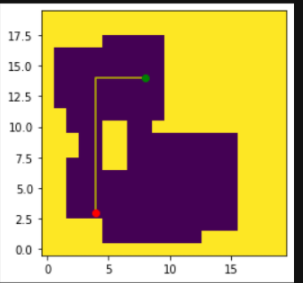
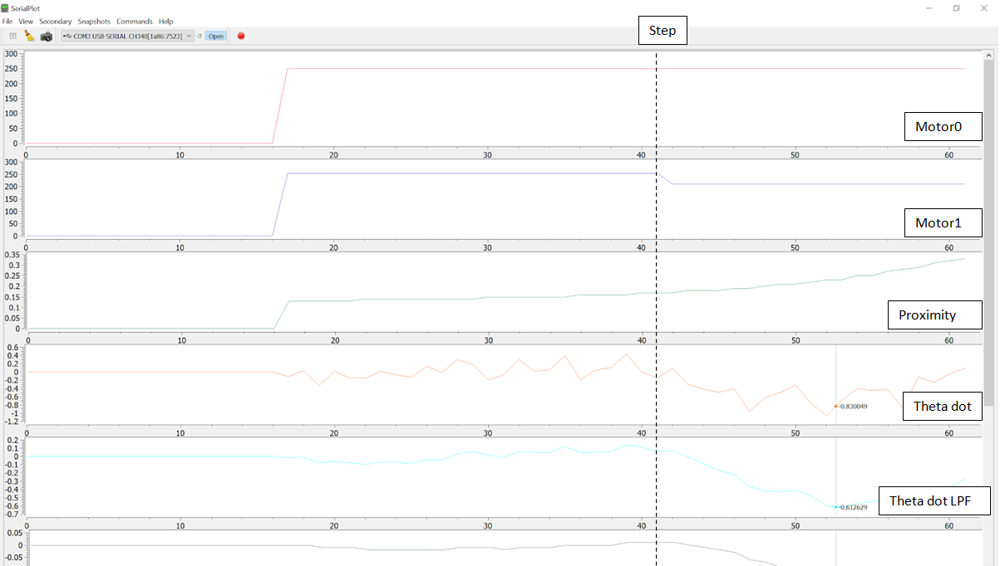
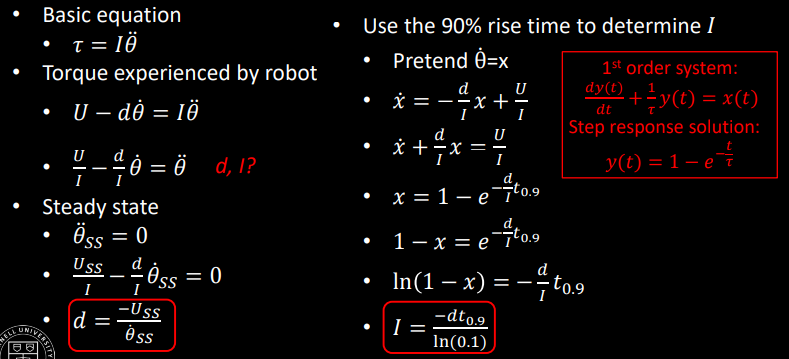

Hi! I'm a junior in ECE and I'm not quite sure what area I'm going to pursue but I have interests in power, optics, and also robotics. I rock climb in my free time (or I did before COVID) and like hiking as well.
Robot
Beep Boop
About
Location
Collegeville, PA (Working from home though the CEI Lab is located at Cornell University, Ithaca NY)
Focus of the Class
Systems level design and implementing dynamic autonomous robots
Goals
Designing a fast autonomous car and exploring dynamic behaviors, acting forces, sensors, and reactive control on an embedded processor
Lab 1
Artemis Setup
The purpose of this lab was to get set up and familiar with the Arduino IDE
and the Artemis board. After this lab, I was able to program your board,
blink the LED, read/write serial messages over USB,
display the output from the onboard temperature sensor,
measure the loudest frequency recorded by the Pulse Density Microphone,
and run the board using a battery instead of my computer.
I was able to successfully connect to the Artemis Nano module and run the Blink Example.
I ran the Example2_Serial script and confirmed that the serial port was working.
I also ran the analogRead example and could read out the voltage and temperature of the module.
The Example1_MicrophoneOutput script allowed me to read the loudest frequency on the serial port. I demonstrated by snapping my fingers (I sadly have the inability to whistle so I did that instead).
Lastly, I modified the microphone script in order to cause the LED to turn on when it recognized a loudest frequency value of above 4000.
Date: September 10, 2020
Lab 2
Bluetooth Communication
Materials/Code Needed
1 x SparkFun RedBoard Artemis Nano
1 x USB A-C cable
1 x Bluetooth adapter
Distribution code
This lab involved testing the low-latency, moderate-throughput wireless communication between the Artemis board and a computer via Bluetooth LE.
The main files to be modified for this lab were ECE_4960_Robot.ino, which was the Arduino sketch to be uploaded, and main.py, which was the Python Bluetooth example.
I first plugged in my Artemis board with my USB-C cable and then set up the USB passthrough to my Ubuntu VM through the VirtualBox Extension Pack and also installed Bleak, a GATT client software capable of connceting to BLE devices.
After setting up the USB passthrough, I was able to download the distribution code and run the ECE_4960_Robot.ino file for with the Arduino IDE and then the main.py to try to discover my robot,
caching the address "66:77:88:23:BB:EF" to Settings["cached"] in settings.py. I noticed sometimes
the Bluetooth will fail to communicate, and in that case, I just turn off and turn back on Bluetooth under "Settings" in my VM, which
usually resolves the issue.
Here's a screenshot of the Serial Monitor of the Arduino side:
In the distribution code, command.h includes a 99-byte structure (cmd_t) with the first byte as the command type, the second as a length, and the rest as data.
Initially, to check my connection with the robot, I had to run await theRobot.ping() in the asynchronous function myRobotTasks()
I was able to successfully discover my robot after configuring the Bluetooth and the received output was a bunch of print-out statements confirming the ping (and pong) as well as the round trip latency.
On average, the round-trip latency looked to be around 0.114 seconds.
Also, as shown in the screenshot and by what I observed by graphing the latencies for 60 pings,
this seemed to be fairly consistent throughout all the pings, with most falling between 0.11 and 0.12 seconds.
This is definitely slower than our baud rate of 115200 symbols/sec.
Requesting a float
To request a float, on the Python script side, I first commented out await theRobot.ping() and instead used await theRobot.sendCommand(Commands.REQ_FlOAT).
In the Arduino sketch, I wrote the code shown below that the script jumps to when it receives the REQ_FLOAT case.
There's a data structure called res_cmd with three fields:
data (the data(float) to send),
command_type (in this case, it's GIVE_FLOAT which the Python side will recognize and then print the float),
and length (which is the length of the data).
I put in the values for the command type and length as described, and then used
memcpy(dest adr, src adr, size of data), a function suggested on Campuswire, to put in a float that starts at res_cmd->data
I was then able to use amdtpsSendData((uint8_t*)res_cmd, 6) to send the float, using 6 for the second field because
it's the size of a float (4 bytes), the length (1 byte), and the command type (1 byte).
Through the simpleHandler on the Python side, I was able to unpack the float I sent.
The main.py program recognized the command_type to be GIVE_FLOAT I sent
from the Arduino side, and unpacked the bytes as a little-endian float, shown below
The value displayed is not quite the value I sent (which was 3.1415), so I guess the accuracy only goes up to whatever
digit you sent.
Testing the Data Rate
Our last subject to cover is finding out what the round-trip latency was by streaming bytes from the Artemis to my computer.
In the main Python script, I found the code in my function myRobotTasks() with
await theRobot.testByteStream(25). Then in the Arduino sketch, I added in code for the case if (bytestream_active).
I sent an example of a 32 bit integer and a 64 bit integer, copying the data for the 64 bit integer to reside in the
address right after the 32 bit integer using memcpy(). In my case, since I wanted to
find the average time between packets sent, I had my 32 bit integer be the number of packets
the Arduino was sending and the 64 bit integer be the time lapsed between transmissions of packets, as shown below.
On the Python side, I first unpacked the byte array into two byte arrays using first, second = unpack("4s8s",data), and then unpacked those again into an integer and a long
respectively. I then printed out the number of packets received, the time in microseconds between packets,
the time in seconds between packets, and the number of packets sent on the Arduino side.
This is shown in the figure.
(# Arduino packets, time in us, time in s, # Python packets)
I will note that one bug I ran into that confused me for a little while was that the amount of packets I counted
that were being sent from the Arduino side were significantly less than the packets being received over
Bluetooth. Obviously, this was very very wrong because packets don't just start multiplying and increasing in quantity
from the receiving side. I realized this was an issue with the threading in the Python script and how all of them
didn't completely end since I was rerunning the program back-to-back too quickly, meaning apparently all the threads didn't close,
and leading to me having about 8 main.py functions running at the same time (which is a bit of a yikes).
Luckily, this was resolved and can apparently be mitigated by just waiting a bit after ending the program instead of running it immediately after.
Here is a histogram of the time between packets in milliseconds when sending a 32 bit and 64 bit integer (14 bytes).
The average time is 10.77 ms with a SD of 0.306 ms.
The average time was also about the same for a different amount of bytes (50 bytes) as shown below, with an average of 10.83 ms.
I attempted this by doing 4 32 bit integers and 4 64 bit integers.
I think the reason they're about the same is because you're still sending 99 bytes.
The big difference I think comes with the packet loss percentage. When sending 14 bytes,
after 2000 packets sent, there were about 1585 received. This is a loss percentage of 20.75%. However,
when I attempted to send 50 bytes, I got a loss percentage of 58.9% which is much higher than I expected.
Therefore, if you wanted to transfer a large set of data this way, you would have to send it in small packets (as opposed to trying to stuff
the 99 byte buffer with as much data as possible). This might take awhile (a second or two), but it would give you more reliable data.
Date: September 19, 2020
Lab 3
Characterizing the car
Characterizing The Car:
The goal of this part of the lab was to document the car in any way that I thought
might be useful later on. Here are some useful measurements/observations:
Dimensions and Basic Stats:
Weight of the car:
Weight of car with yellow battery: 541 g (1.19 lb)
Weight of car with green battery: 523 g (1.15 lb)
Width between axes of left and right wheel: 10.35 cm (4.075 in)
Distance between front axis and back axis (wheelbase): 7.9 cm (3.11 in)
Dimensions of black base of the car: 12 cm x 6.5 cm
Diameter of wheels: 77.5 mm (useful for future labs involving distance traveled)
Width of wheels: 3.5 cm
Time to charge battery: around 4-5 hours (wasn't watching it near the end but that seems like a good estimate)
Battery life of car: 32 minutes not running at full speed the whole time (probably around 20 minutes)
Testing the Car's Capabilities:
Max Angle of Incline without slipping (not in motion): 21 degrees:
I tested the robot on multiple surfaces:
Hardwood floor: runs very smoothly (ideal conditions)
Grass: runs surprisngly well
Carpet: basically the same as grass (a little bit better)
Driveway: yep checks out
The robot can reliably turn around its own axis most of the time, at both fast and slow speeds.
With the robot spinning around its own axis at full speed,
I was able to record how many rotations the robot could complete in a certain amount of time. After
averaging three trials, I got a max rotational speed of 1.73 rotations/sec, or 10.87 rad/sec. This happened when
the battery was at approximately full capacity.
Distance needed to stop after starting from full speed (averaged from 5 trials): 4.7 feet
Braking distance in slow mode: 5.5 inches
Acceleration:
I attempted to measure how quickly the car could change speeds by placing tape indicators every 10 inches on the floor and seeing how much the
velocity of the car increased from rest. The car is capable of accelerating at a quick pace, and this acceleration seems to remain
relatively similar regardless of the battery charge left on the robot. Note: in the following trials described,
the battery was at around 75% of its full capacity.
After four trials and analyzing each video in slow motion, I roughly estimated that the
robot is capable of reaching 3.8 ft/s after just 0.3 seconds and should reach its max speed within 0.7 seconds after starting from rest.
I wasn't able to get a solid value for the acceleration without any sensors currently on the car.
I was also able to determine the robot is capable of a decently wide set of velocities, measuring the speed using
the method below. I had the robot start earlier than my 10 inch distance markings (so I would start
measuring the velocity after it had finished accelerating). I then watched the video in slow motion to determine the velocity.
The max and minimum speeds the robot can achieve seem to be highly dependent on battery
life. At a low battery level, it is capable of very slow speeds (especially in slow mode). However, at almost full battery
capacity and based on the data, it appears the robot can reach up to 8.33 ft/sec (2.5 m/s)
Manual Control:
There seem to be three different speed options (faster, intermediate, slower). The middle and
faster option are hard to control, especially the faster option. With the max possible speed, I was basically
constantly flipping the robot when I was driving it around.
The robot is very prone to flipping when running
at full speed due to its center of mass being a bit high. I think when we take off the top of the robot, it'll
be able to have more stability due to a lower center of mass.
Starting from about a 5 meter distance at full speed, I could get about 4 inches from the wall without crashing,
though this involved practicing multiple times to make sure I knew when to slow down quickly enough. Based on the braking distance
I measured for when the robot needed to go from full speed to a complete stop, I was able to accurately stop the car by
braking about 5 feet from the wall, as mentioned previously.
Tricks:
I couldn't get the robot to balance on one set of wheels reliably. I wasn't able to
get it into that position at a lower speed, and the quicker speeds were not controllable to
the extent where I could come close to getting the robot to balance itself. Occasionally, if I got the
robot to flip halfway, I could get it to briefly balance on one set of wheels, but it seems to
be a trick that requires more fine tuned feedback control.
I was easily able to get my car to flip (by going forwards and then quickly flipping the joystick backwards)
I could get the robot to perform some decently fine-tuned actions. For example, I was able to do parallel parking
with my robot.
(Yikes, my robot is better at parallel parking than me)
Additionally, my robot generates enough force to break in to a door.
(Breaking and Entering)
Running the Virtual Robot
I installed the software dependencies and setup the base code in my VM.
I then was able to run lab3-manager, pressing a and s
to start the simulator, allowing me to run tests on my robot.
Additionally, I ran robot-keyboard-teleop to control the virtual robot through
keyboard commands.
The robot can go to very low linear and angular speeds (to where it's basically not moving),
as well as very high linear and angular speeds (as shown below). This is due to the robot being
a simulation, meaning it can change it's angular and linear speed/direction practically instantaneous, currently
without the factors of friction, skidding, etc.
Robot moving in the simulation (Gotta go fast)
From my few tests on the virtual robot, I could see that when the robot bumps into an obstacle,
a warning sign will pop up and the simulation will pause,
meaning you then have to manually drag your robot back to
a non-obstacle occupied place.
Date: September 23, 2020
Lab 4
Motor driver & open loop control
The purpose of the lab was to change from manual to open loop control of the car. At the end of the lab,
my car was able to execute a pre-programmed series of moves using the Artemis board and the motor driver over I2C.
Parts Required:
1 x SparkFun RedBoard Artemis Nano
1 x USB A-to-C cable
1 x Li-Ion 3.7V 400 or 500mAh battery
1 x Sparkfun Qwiic motor driver
1 x R/C stunt car and NiCad battery
1 x Qwiic connector
1 x Small screwdriver (Phillips or flathead)
1 x Wirecutter (you can also make do with a scissor)
Lab 4a:
I first hooked up the Artemis and the motor driver using a Qwiic connector. I then ran Example_wire
and found the I2C address to be 0x5D (93).
I then took the car apart, unscrewing and removing the shell/bumpers from the car. I also removed
the battery and took out the control PCB, cutting its power lines. I hooked up the power wires to the SCMD instead
noting where the VIN on the SCMD marks the location of the positive terminal.
After that, I cut the connector headers from the motor wires and instead hooked them up to the terminals on the board instead. I mounted the
SCMD in the place of the original control PCB and then used the Qwiic connector to hook
up the Artemis board with the motor driver. Note: since the Qwiic connector was too big to route through the hole in the chassis,
I just drilled a bigger hole there so I could feed the wires through.
Additionally, I added a red jumper between the PSWC pins on the Artemis board so
I could easily switch on and off the board (meaning I didn't have to yank out the battery connector everytime)
Using the Arduino library manager, I installed the SCMD (Serial Controlled Motor Driver) library. I was then able to make the robot
follow a straight line, noticing that the right motor is stronger than the other. Therefore, for the left motor to go forwards
(motorNum = 0 and direction = 1), I had to
compensate for the imbalance with myMotorDriver.setDrive(0, 1, 118) to drive the left motor. For the right motor to go forwards
(motorNum = 1, direction = 1),
I did myMotorDriver.setDrive(1, 1, 100).
I then tested the lower limit for which each motor still turns.
For the left motor, this seemed to be around myMotorDriver.setDrive(0, 1, 68), while for the right motor
it seemed to be around myMotorDriver.setDrive(1, 1, 50)
Technically, the motors are
able to start at lower values, but I have to give the wheels a little help (a nudge to start) so I only counted
the threshold where the wheels could fully turn without any assistance at the beginning from me. Additionally, I only
counted the threshold where the car could actually move forwards. The wheels could spin at a lower threshold with the car on its back
but I thought this wouldn't be as important since the robot couldn't actually go forwards with the inhibitions of friction and the weight
of the car.
Lastly, I just used open loop control of the robot to drive it around and make it spin around its own axis.
Lab 4b: Open Loop Control
Setting up the Base Code and Starting the Simulator
I setup the base code by extracting the lab 4 base code in VM and typing ./setup.sh in my terminal,
successfully compiling the lab
To start the lab4-manager, I opened a terminal window and typed in lab4-manager
I then launched the simulator by pressing "a" and then "s" on my keyboard.
Jupyter Lab Code
We were introduced to Jupyter Lab to write our Python code. To start a Jupyter server, I did the following:
Opened a terminal and cd into /home/artemis/catkin_ws/src/lab4/scripts.
Started a jupyter server using jupyter lab
Opened "lab4.ipynb"
I was then able to work with the Robot Class which provides a control interface for the robot in
the simulator and performs the following operations: getting the robot odometry pose, moving the robot, and getting
range finder data.
In order to have my robot move in a rectangular loop, I first imported the necessary modules for
my Python script and then instantiated/initialized an object of class Robot. I then set the linear velocity to a value and the angular velocity
to 0, let this run for a length of time, and then set the linear velocity to 0 and the angular velocity to a value, letting this run for a length of time.
By tuning my values, I could make the angles 90 degrees and modify the size of my rectangle by changing the amount of time I let the robot run with a
non-zero linear velocity.
To set the lengths of time, I used the time.sleep() function and to make 90 degree turns, I had the angular velocity be set to 2 for 1 second.
My code and demonstration are shown below:
Date: September 29, 2020
Lab 5
Prox, TOF, Obstacle avoidance
The purpose of the lab was to enable the robot to perform obstacle avoidance by putting distance sensors
on the car, getting them working, and then attempting fast motion around the room without crashing into obstacles.
Parts Required:
1 x SparkFun RedBoard Artemis Nano
1 x USB A-to-C cable
1 x 4m ToF sensor
1 x 20cm proximity sensor
1 x Li-Ion 3.7V 400 or 500mAh battery
1 x Sparkfun Qwiic motor driver
1 x R/C stunt car and NiCad battery
1 x Qwiic connector
1 x Gray target
1 x Ruler or graph paper
1 x Double sided tape
1 x Small screwdriver
1 x Wirecutter
Lab 5a: Obstacle Avoidance
Prelab:
I read over the datasheet and manual for the proximity board and found the device address to be 0x60.
I also read over the documentation for the ToF breakout baord, which has an I2C address of 0x52.
The Proximity Sensor Breakout can read from 0 cm (the face of the sensor) to about 20 cm away. However,
it doesn't have a wide angular range. It's also not very
accurate for detecting quantitative distance readings but it is good at seeing if objects appear in front of it. I think ideally we would
walk to put it on the front of the car to ensure we are not bumping into objects in front of the robot, but they'll be scenarios where the robot will bump into
things on the side since it basically lacks peripheral vision or sensors. Additionally, just having that one sensor in the front would obviously mean the robot would
not be able to see behind itself and would therefore run into any items behind it. Also, since the range is only 20 mm, there might be situations where the robot is close to an object but does not detect
it due to inaccuracies in the sensor or being just over 20 mm away, meaning the robot would not be able to react/stop in time.
The ToF breakout board has a FoV from 15-27 degrees so it's basically just for looking straight forwards as well. It has a max distance of either
136, 290, or 360 cm in the dark but this distance is less in ambient light (where it's more sensitive).
It will also have the same narrow FoV problems as the proximity sensor. However, it is much better at
quantitative measurement as opposed to the proximity sensor, and is less sensitive to color and texture. Putting it in the front of the car is the best approach
since the car is primarily driving forwards and then turning when it sees obstacles. The car would miss seeing obstacles similar to the proximity sensor,
due to the sensor's position in the front, but it would have less problems with range since the range is 1.3m as opposed to 20 mm.
There are a multitude of distance sensors based on IR transmission.
Amplitude based IR sensors do not work
in high ambient light and depend on a target's reflectivity. However, they are usually cheap, small, and lightweight, and can be used
for sensor fusion with other more reliable sensors.
IR triangulation sensors are insensitive to surface color, texture, and ambient light but also do not work in
high ambient light and have a low sample rate.
Lastly, there are ToF sensors (which we are using as well) which are a bit more
expensive than amplitude-based IR sensors though cheaper than triangulation sensors.
They are insensitive to surface color, texture, and ambient light. We will be using this sensor
primarily for obstacle avoidance due to its better accuracy, range, and decreased light noise sensitivity than other sensors, with the
proximity sensor as a backup/offering supporting data for sensor fusion.
Proximity Sensor
Using the Arduino library manager, I installed the SparkFun VCNL4040 Proximity Sensor Library and hooked up the sensor. I scanned the I2C channel to find the sensor at 0x60, which matches with the datasheet.
I could then test the sensor using the Example4_AllReadings script.
Here is a graph of the proximity value readings vs distance for 3 different colored objects in a well lit room.
One object was a square white box, another was a pack of yellow sticky notes,
and the last was my black notebook. I was able to see that the different colors did indeed impact the
proximity value. The darker the color, the lower the value. This is because the IR is likely being absorbed more by darker materials as opposed to being
reflected as for light materials, meaning the reading is lower.
All of them show a drastically higher level at a closer distance as opposed to a distance further away. I think this indicates that the proximity sensor
is best used for objects/obstacles that emerge very close to the robot, as it has a higher sensitivity to that range. This is further emphasized by how
I graphed them using a log scale.
I then tested the white box in a different ambient light environment (I turned the lights off and test it in the dark). The values were very close
and basically indistinguishable from one another meaning ambient light levels shouldn't have a major impact on the proximity value.
I also tested different types of textures. When I tested a black matte surface vs a black reflective surface, I saw higher values for the reflective surface because
similar to the white and yellow objects previously, some of the reflective surface reflected more of the IR rays as opposed to the phone case where the light
was mostly absorbed. This is a downside to the proximity sensor as it depends on the target's reflectivity.
Lastly, I looked at the ambient light and white level data. The ambient light was lower the closer the object was to the sensor, as when it was closer it blocked
more of the ambient light to hit the sensor. Additionally, the black object had the lowest ambient light and white levels due to the same reasons stated previously.
I am also assuming the shadows that resulted from when the object was very close to the proximity sensor resulted in the lower white levels for the smaller distances.
I can therefore conclude that the sensor is sensitive to ambient light, though the proximity values seem to not be affected by this ambient light.
It takes about 630 us each for each of the getWhite(), getAmbient(), and getProximity() functions, which is
a fairly high rate. I found it as follows:
unsigned long time0 = micros();
unsigned int proxValue = proximitySensor.getProximity();
unsigned long measTime = micros() - time0;
Serial.println(measTime);
However, I noticed that it takes about 4 seconds for the
data to stabilize after a sudden change. The sensor readings can be a bit jumpy, so it's definitely better for qualitative as opposed to quantitative
measurements.
Time of Flight Sensor
Using the Arduino library manager, I installed the SparkFun VL53L1X 4m laser distance sensor library, hooking up the sensor to the
Artemis board using a QWIIC connector. I scanned the I2C channel to find the sensor at 0x60, which matches with the datasheet.
I could then test the sensor using the Example1_ReadDistance script, after first running the Calibration
script with the gray target we were given with our kit. This calibration code didn't work as expected(?), so I added in startRanging and stopRanging() which
then allowed me to run the code correctly.
The timing budget has a min and max of 20ms and 1000ms respectively. If
we wanted to collect the most amount of data and run the robot in Short Distance mode, we would want to set the timing budget to be 20 ms.
This also takes into account power consumption, and how we don't always want the sensor to constantly be collecting data. The repeatibility error
is higher at lower timing budgets do I set the timing budget to be a little higher than 20 ms, as 30 ms.
We also consider the max speed we know the robot can go at in order to determine
the measurement period (the time between when measurements start and end, when the sensor is in low power mode). The robot has a max speed of around 8 ft/s
and I think the next part of the lab involves us trying to make it go as fast as possible.
I guess to ensure the robot won't collide with the wall or any objects when traveling quickly, I'm estimating that we want to
at least check the robot's position every 4 inches. Doing t = d/v, I then got a value of around 37.5 ms.
Because of this, I know that the measurement period should be around 37.5 - 30 (assuming the timing budget is 30 ms). I then set my value to 5, knowing that any value
below 30 would mean the robot would immediately start ranging again after it completed.
I set these values using:
distanceSensor.setTimingBudgetInMs(30);
distanceSensor.setIntermeasurementPeriod(5);
To optimize the ranging performance, I decided to use the short distance mode since the room I'm running the robot in is not the
largest. Additionally, the range in short distance mode is about 1.3 meters (4.25 feet) which seems to be an adequate distance to start stopping a robot
going at 8 ft/s, knowing that the coasting distance (from Lab 3) was around 5 feet, and that I can cut this distance down by implementing
reverse motor controls (though not too much because then the car will flip). I set this mode using distanceSensor.setDistanceModeShort();.
It appears the most common errors are
a signal fail or a wrapped target fail, which seem to be due to shaking or sudden movements that the sensor sees. Since it is sensitive to these sudden
movements, I can use these failure mode indications to ignore the readings that result during those errors.
Lastly, I documented the ToF sensor range and accuracy. I had my test setup as shown below, running the sensor in Short Mode since that's
the mode I'm using for obstacle avoidance:
My data is as shown below:
I can conclude that the sensor has good repeatability as I ran it three times on 3 different days at roughly the same ambient light (running
in the same room with the same lights on), resulting in basically identical graphs. I did 100 measurements at each distance point (which was every
100 mm) and found the mean and SD at each. The ToF SD's were minimal and the ToF means were extremely close to the actual distance all the way up to around 1250 mm,
before the mean started deviating from the actual distance (increasing at a slower rate than it's original linear pace) and the SD drastically increased as well.
I can then conclude that the sensor is extremely accurate within at least a 1250 mm range.
I also tested in a pitch black room as opposed to my normal well lit room as shown in the graph, and I could see that the results were a little bit closer
to the actual distances for the distances further away than 1250 mm. I think this is due to the sensor being in Short Distance mode as well
as ambient light starting to interfere at further distances in lighter conditions, and not so much in dark conditions where it has slighter
better performance. I also tested with different colors and textures with the results being virtually identical (as opposed to the proximity sensor),
meaning this sensor is more insensitive to those aspects of objects.
In terms of the timing measurements, which I measured using the micros() function to time certain functions:
Just reading = 725 us
ToF ranging (with StopRanging) = 2.87 ms
ToF ranging (no StopRanging) = 2.42 ms
Obstacle Avoidance
I first mounted the sensors, Li-Ion battery, and Artemis board firmly to the car using the double-side tape from
my kit and a bit of cardboard for the proximity and ToF sensors at the front. I daisy-chained all the sensors, the motor
driver, and the Artemis board using QWIIC connectors, and I also made a cardboard bumper so I would have a smooth surface to mount
the sensors on, angled slightly upwards to it wouldn't accidentally detect the floor.
I incrementally tested the vehicle, starting out with a speed of around 80 on both motors. I could then figure out the approximate distance needed
as the threshold for the car to stop and turn, which I found to be about 500 mm. I basically kept increasingly bringing up the
linear speed, while also changing the values of time and speed that I spent either braking, coast, or turning to compensate for the increase in speed
before I reached a point where the robot was bumping into objects more. Also, I was able to use the rangeStatus function to check if a sensor
measurement was valid though I did not end up using the proximity sensor. When I added it into my program, it didn't seem to add any less collisions
and in fact almost seemed to make the performance worse since it appears to be less accurate and reliable. Therefore, my code just involves fine-tuning
the ToF sensor.
My robot travels forward basically whenever the distance measurement is greater than the threshold, varies from 500 to 800 depending on if
the robot just turned or whether it had first sensed an obstacle since this strategy led to better performance by minimizing the robot not turning
enough and colliding straight into an object. If it sees an obstacle, it brakes, coasts, and then turns.
Through this process, I ended up with the following code:
#include "ComponentObject.h"
#include "RangeSensor.h"
#include "SparkFun_VL53L1X.h"
#include "vl53l1x_class.h"
#include "vl53l1_error_codes."
#include "Wire.h"
#include "Arduino.h"
#include "stdint.h"
#include "SCMD.h"
#include "SCMD_config.h" //Contains #defines for common SCMD register names and values
#include "SparkFun_VCNL4040_Arduino_Library.h"
//Optional interrupt and shutdown pins.
#define SHUTDOWN_PIN 2
#define INTERRUPT_PIN 3
#define LEDPIN 13
SFEVL53L1X distanceSensor;
SCMD myMotorDriver;
#define left 0
#define right 1
void setup(void)
{
Serial.begin(115200);
Wire.begin();
pinMode(LEDPIN, OUTPUT);
//************************************************************************
//Connect to all sensors and motor driver
if (distanceSensor.begin() != 0) //Begin returns 0 on a good init
{
Serial.println("Sensor failed to begin. Please check wiring. Freezing...");
while (1);
}
// Serial.println("Sensor online!");
myMotorDriver.settings.commInterface = I2C_MODE;
myMotorDriver.settings.I2CAddress = 0x5D; //config pattern is "1000" (default) on board for address 0x5D
myMotorDriver.settings.chipSelectPin = 10;
//*****initialize the driver get wait for idle*****//
while ( myMotorDriver.begin() != 0xA9 ) //Wait until a valid ID word is returned
{
Serial.println( "ID mismatch, trying again" );
delay(500);
}
Serial.println( "ID matches 0xA9" );
// Check to make sure the driver is done looking for slaves before beginning
Serial.print("Waiting for enumeration...");
while ( myMotorDriver.ready() == false );
while ( myMotorDriver.busy() ); //Waits until the SCMD is available.
myMotorDriver.enable();
//****************************************************************************
// Distance sensor
distanceSensor.setDistanceModeShort();
distanceSensor.setTimingBudgetInMs(30);
distanceSensor.setIntermeasurementPeriod(5);
}
int threshold = 500;
void loop(void)
{
distanceSensor.startRanging();
while (!distanceSensor.checkForDataReady()) {delay(1);}
int distance = distanceSensor.getDistance() + 21; //Get the result of the measurement from the sensor + offset
byte rangeStatus = distanceSensor.getRangeStatus();
if(rangeStatus==0){ // if no sensor errors occur (sigma, signal, etc)
if(distance = 0 || distance>threshold) { // onwards
myMotorDriver.setDrive(left, 1, 160);
myMotorDriver.setDrive(right, 1, 148);
delay(10);
threshold = 500;
}
else {
digitalWrite( LEDPIN, 1 );
myMotorDriver.setDrive(left, 0, 250); //brake
myMotorDriver.setDrive(right, 0, 250);
delay(100);
myMotorDriver.setDrive(left, 0, 0); //coast
myMotorDriver.setDrive(right, 0, 0);
delay(50);
myMotorDriver.setDrive(left, 1, 150); //turn
myMotorDriver.setDrive(right, 0, 150);
delay(40);
threshold = 800;
}
}
}
I was able to make the robot follow a straight line as well and stop before hitting the wall. I could do this reliably at a speed of around 4.1 ft/s, found since the
green line is 6ft and each run took about 1.57 s.
Above that speed, I was able to get the car to follow the straight line and stop, but it was not so great in terms of avoiding obstacles in general.
I created functions for going forwards, turning, going backwards, etc. and also tuned the distances and times based on the speed the robot was going at.
This way, braking in time was more optimized and while it may take a little time to turn, I think the accuracy is a big improvement from before.
#include
#include
#include "SCMD.h"
#include "SCMD_config.h" //Contains #defines for common SCMD register names and values
#include "Wire.h"
#include
#include
#include
#include
#include
#include
#include "SparkFun_VL53L1X.h" //Click here to get the library: http://librarymanager/All#SparkFun_VL53L1X
//Optional interrupt and shutdown pins.
#define SHUTDOWN_PIN 2
#define INTERRUPT_PIN 3
#define LEDPIN 13
const float _adjustPercent= 1.0630;
const int _pwrLevel = 255;
const int _minObjDistance = 400;
const int _forwardCounterRatio = 6;
const int _turnTime = 1;
const int _coastingTime = 50;
const int _backwardTime = 50;
SFEVL53L1X distanceSensor;
SCMD myMotorDriver; //This creates the main object of one motor driver and connected slaves.
void setup()
{
Wire.begin();
Serial.begin(115200);
Serial.println("VL53L1X Qwiic Test");
if (distanceSensor.begin() != 0) //Begin returns 0 on a good init
{
Serial.println("Sensor failed to begin. Please check wiring. Freezing...");
while (1)
;
}
Serial.println("Sensor online!");
pinMode(LEDPIN, OUTPUT);
Serial.println("Starting sketch.");
//***** Configure the Motor Driver's Settings *****//
// .commInter face can be I2C_MODE or SPI_MODE
myMotorDriver.settings.commInterface = I2C_MODE;
//myMotorDriver.settings.commInterface = SPI_MODE;
// set address if I2C configuration selected with the config jumpers
myMotorDriver.settings.I2CAddress = 0x5D; //config pattern "0101" on board for address 0x5A
// set chip select if SPI selected with the config jumpers
myMotorDriver.settings.chipSelectPin = 10;
//*****initialize the driver get wait for idle*****//
while ( myMotorDriver.begin() != 0xA9 ) //Wait until a valid ID word is returned
{
Serial.println( "ID mismatch, trying again" );
delay(500);
}
Serial.println( "ID matches 0xA9" );
// Check to make sure the driver is done looking for slaves before beginning
Serial.print("Waiting for enumeration...");
while ( myMotorDriver.ready() == false );
Serial.println("Done.");
Serial.println();
//*****Set application settings and enable driver*****//
while ( myMotorDriver.busy() );
myMotorDriver.enable();
Serial.println();
distanceSensor.setDistanceModeShort();
distanceSensor.setTimingBudgetInMs(20);
distanceSensor.setIntermeasurementPeriod(20);
}
void loop()
{
static bool back;
static long fowardCounter;
float speedAdjuster = fowardCounter/_forwardCounterRatio;
if (speedAdjuster > 8 ) speedAdjuster = 8;
if (getDistance()> (_minObjDistance + speedAdjuster * 100) ){
back=false;
motorForward();
fowardCounter++;
}
else {
digitalWrite( LEDPIN, 1 );
if (!back){
motorCoasting(_coastingTime );
motorBackward(_backwardTime + speedAdjuster * 25 );
motorPivotRight(_turnTime);
back=true;
fowardCounter = 0;
}
// motorStop();
}
}
int getDistance(){
distanceSensor.startRanging(); //Write configuration bytes to initiate measurement
while (!distanceSensor.checkForDataReady())
{
delay(1);
}
int distance = distanceSensor.getDistance(); //Get the result of the measurement from the sensor
distanceSensor.clearInterrupt();
distanceSensor.stopRanging();
return distance;
}
void motorForward(){
myMotorDriver.setDrive( 0, 1, _pwrLevel); //Drive motor i forward at full speed
myMotorDriver.setDrive( 1, 1, _pwrLevel*_adjustPercent);
delay(10);
}
void motorCoasting(int time){
myMotorDriver.setDrive( 0, 0, 0);
myMotorDriver.setDrive( 1, 0, 0);
delay(time);
}
void motorBackward(int time){
myMotorDriver.setDrive( 0, 0, _pwrLevel);
myMotorDriver.setDrive( 1, 0, _pwrLevel*_adjustPercent);
delay(time);
}
void motorPivotRight(int time){
myMotorDriver.setDrive( 0, 1, _pwrLevel*0.7); //Drive motor i forward at full speed
myMotorDriver.setDrive( 1, 0, _pwrLevel*_adjustPercent*0.7);
delay(time);
}
void motorPivotLeft(int time){
myMotorDriver.setDrive( 0, 0, _pwrLevel*0.7); //Drive motor i forward at full speed
myMotorDriver.setDrive( 1, 1, _pwrLevel*_adjustPercent*0.7);
delay(time);
}
void motorStop(){
myMotorDriver.setDrive( 0, 1, 0);
myMotorDriver.setDrive( 1, 1, 0);
delay(10);
}
Lab 5b: Obstacle Avoidance on My Virtual Robot
I downloaded and setup the lab5 base code in my VM like I had previously done in Lab 4. I then
started the simulator from the lab5-manager using lab5-manager, before I changed the directory to the lab5
work folder and started the Jupyter server in my VM (in the same way as Lab 4). I then opened the lab5.ipynb notebook to start the lab.
To do object avoidance for the virtual robot, I used data from the robot's range finder. In an infinite while loop, I first started off by having the
robot turn whenever it saw a wall through a condition in a while loop. Basically, if the robot saw a distance less than or equal to 0.5,
I made the robot stop and turn
around its axis at a speed of 1 for 0.25 seconds. Else I set the velocity to 1 and kept the robot going forwards for 0.1 seconds.
After trying this out, I saw that I could fine tune this to let the robot be able to get closer to the wall without crashing.
This just required some trial and error since the robot sometimes wasn't moving at a perfect perpendicular angle to a wall, meaning that
since the laser distance finder on the virtual robot seemed to primarily point straight in front of it, I couldn't make the value too small
or else the robot might sometimes not see the wall and crash. I had robot move at 90 degree angles to be less likely to approach a wall at a random
angle and collide with it, especially when the robot is driving almost parallel to a wall. I also settled on alternating the angle so the robot
could take a more random path (it kept going in a rectangle if I just had it be the same angle).
I played around with the durations for the times the robot went forwards or turned using the time.sleep() command
which maintains the velocity designated before for the amount of seconds specified in the parameter to the sleep function. I made the robot turn about
90 degrees using the set_vel() function and also experimented
with the linear speeds of the virtual robot in terms of trying to minimize collisions. You can make the robot go faster but then you have to
make the distance in the while-statement a little larger to compensate for this. I settled on a linear speed of 0.7, and a distance threshold of 0.3,
also making the robot back up a little before it turns.
There are situations after time where the robot will deviate from its 90 degree angles and increasingly become offset from the maze's grid,
becoming more likely to run into obstacles since it starts to bounce into the wall at more random angles.
Date: 10/10/20
Lab 6
IMU
The purpose of the lab was to setup the IMU, mount it on the robot, and attempt to do PID control on the rotational speed.
Parts Required:
1 x SparkFun RedBoard Artemis Nano
1 x USB A-to-C cable
1 x Li-Ion 3.7V 400 or 500mAh battery
1 x Sparkfun Qwiic motor driver
1 x R/C stunt car and NiCad battery
1 x Qwiic connector
1 x IMU
1 x ToF sensor
Lab 6a: IMU, PID, and Odometry
Prelab:
I installed SerialPlot to help visualize the data and read through the IMU Sparkfun documentation and datasheet. I also
installed the PID Arduino library.
Setting up the IMU
I confirmed that the SparkFun 9DOF IMU Breakout-ICM 20948 Arduino library was installed and connected the IMU to the Artemis board using
a QWIIC connector. After scanning the I2C channel, I found the sensor at address 0x69 which matches the datasheet. I ran the
"\Examples\SparkFun 9DOF IMU Breakout-ICM 20948 Arduino library\Arduino\Example1_Basics" script and observed how the accelerometer had data
for the x, y, and z orientations. The accelerometer z-axis measurement was always around 960 cm/s^2 due to gravity, as shown below when the IMU is at rest.
When I accelerated in a direction indicated in silkscreen on the IMU, there was an increase in value for
the accelerometer measurement in that direction. Likewise, I saw that when I rotating around either the x, y, and z axes, there was a
corresponding spike in gyroscope value for those relative axes as it measures the rate of angular change, before it stabilized back to 0.
Accelerometer
I first taped the accelerometer to a box so I could easily rotate/move it accurately:
Using the average from 200 measurements each, I found the output at {-90,0,90} degrees pitch and roll:
Pitch (-90 degrees) = -92.55
Pitch (0 degrees) = -0.58
Pitch (90 degrees) = 92.09
Roll (-90 degrees) = -91.58
Roll (0 degrees) = 0.70
Roll (90 degrees) = 91.86
I also recorded the output on the Plotter for those angles in terms of pitch and then in terms of roll.
The accelerometer is pretty accurate once you filter the output or have the IMU at rest (since it's fairly noisy). The angles of pitch and roll using
the data from the accelerometer were very close to the actual values, with the angles changing from 0-90 or -90-0 at a conversion factor slightly above 1 (around
1.025 for both pitch and roll). I notice a little bit of instability when the roll is exactly -90 or 90 degrees (the tan calculation jumps around
due to noise).
I wrote Python code using the tutorial on the lab page to plot the frequency response by doing a Fourier Transform. I received the data below for the
frequency domain and I was a bit surprised to find that it is incredibly noisy. I had difficulty figuring out a cutoff frequency for my low pass filter
based on this data and estimated that is was around 200 Hz. Knowing that the alpha value for the low pass filter was T/(T+RC) and that RC was around 33.3 and T was around 200 Hz,
I then used trial and error to figure out the correct alpha value to be around 0.2. I noticed that the lower the value, the smoother the signal looked
but the measurement did seem to lag a little bit more.
The gyroscope pitch/roll calculation is to accumulate the integral of angular acceleration over time to estimate the angle, which tends
to drift away over time as shown below. The rolling angle from the accelerometer and gyroscope are about the same at the beginning, but start to drift away from each other over
time. It looks like the drifting is worse in high sampling rates as opposed to lower sampling rates, with the drift becoming evident faster. Other than the drift though, the data looks quite
accurate and responds faster than the accelerometer due to the filtering there.
I then filtered out the noise like with the accelerometer and got:
See the diagram below (green - complementary filter, red - gyroscope, blue - accelerometer).
It uses the short term gyroscope data, and compliments it with the long term accelerometer to prevent drift.
Here is the position of the IMU with a phone compass as a reference.
The compensated values (red) are more stable than the uncompensated values (blue) to small changes in pitch, as shown below
PID Control
1. Ramp up and Down Function
I first changed the IMU settings to have the maximum gyroscope resolution be 1000 dps instead of the default value of 250 dps.
ICM_20948_fss_t myFSS; // This uses a "Full Scale Settings" structure that can contain values for all configurable sensors
myFSS.g = dps1000; // (ICM_20948_GYRO_CONFIG_1_FS_SEL_e)
myICM.setFullScale( (ICM_20948_Internal_Gyr), myFSS );
if( myICM.status != ICM_20948_Stat_Ok){
Serial.print(F("setFullScale returned: "));
Serial.println(myICM.statusString());
}
I then set the motors to run in opposite directions and slowly increase the motor speed and then decrease it over 25 seconds.
I graphed the motor speed vs. gyroscope reading using SerialPlot.
Here are the measurements and characteristics of the vehicle:
Max rotation speed = 998 dps
Deadband for increasing motor speeds:
111 for drive 0
145 for drive 1
Deadband for decreasing motor speeds
103 for drive 0
135 for drive 1
The left motor has a lower deadband and always spins first.
The red data is the motor output and the purple is for the gyroscope output:
2. Lowest possible speed at which you can turn:
I found the lowest speed to be around a motor power of 170, with a gyroscope average of around 280 degrees/sec.
Below 180, I got this graph for a motor power of 170 (with a single wheel turning and a gyroZ average of around 110):
Additonally, I tested the limit where both wheels stopped turning. This seemed to be around a motor power of 160 as shown below:
3. Accuracy of TOF ranging
We can achieve a stable rotation speed of 170 dps for the vehicle. The lowest sampling rate for the TOF sensor in short range
mode is 20 ms. This means that the vehicle can rotate 3.6 degrees in one TOF measurement. At a 0.5m vertical distance from the wall,
the distance will change from 50cm to 50cm/cos(3.6) = 50.1 cm in 1 TOF measurement.
At 0.5m starting from a 45 degree angle from the wall, the distance will change from 50cm to 50cm/sin(48.6) - 50cm/sin(45) = 2.1cm. I think given
the two parameters signal and sigma, we might get a reliable rotational scan but ideally we would probably want the robot to travel a factor or two slower
to achieve a more reilable rotational scan.
4. PID Control
I originally decided to go with PID control since I knew using only P control would lead to a steady-state error because that type
of controller requires an error input to function. However, after trying to tune the values with PID, I saw that the rate of change of the error
didn't seem to help with controlling the robot since the change in error rate didn't seem too significant. In fact, adding in the differential coefficient
led to oscillations in the output and made the controller a lot more difficult to tune due to the noise of the sensor (since derivatives amplify HF signals
more than LF signals). Additionally, when I added in
Kd, I saw motor clamping that was hard to eliminate. Because of this, I went with
PI control since it provides zero control error and seems to reach a more stable state.
I also have to note that a crappy USB-C cable is better suited for this lab since it has a thinner/softer cable that drags less when the vehicle
is rotating with the cable connected.
I first wrote my functions for using PID control, so I could then focus the rest of my time on tuning the values.
To tune the PI controller, I leaned towards Heuristic Procedure 1 in the lecture notes. I set Kp to a small value,
with KI as 0 at first. I then increased KP until I got overshoot or any oscillations, before decreasing it. This step took a decent
amount of time to eliminate any oscillation, but after that I could move on to the integral coefficient. I slowly increased this from 0 until I saw overshoot, and then
continued to run the robot until I had eliminated oscillations.
In particular, I first started with a gyroZ target of 200 dps and a Kp of 5, which was clearly too high:
I then proceeded to scale down Kp to 1 with a static error of around 50.
I lowered Kp to 0.5 and Ki to 0.1 which led to a very unstable system.
Knowing Ki was too high, I spent a lot of time trying to tune the parameters and I ended up with a gyroZ value of 170, Kp = 0.935 and Ki = 0.00255.
As shown, this system looks stable.
I also have a motor power range limiter in runPIDLoop() since the motor is a nonlinear actuator with a limited power range, and we
have to implement integral clamping to avoid an integral wind-up issue. This resulted in me putting clamps on anything below a
motor power level of 80 or anything above a motor level of 255.
As shown, the robot can clearly reach lower speeds using PID control as compared to open loop control. I went from an open loop speed
of 280 dps to a speed of around 170 dps, which is significantly lower. It is about slow enough to produce a rough rotational scan, though
I think this scan might not be the most reliable given that this is still around half a full rotation in one second.
5. One Motor Only
I then used PID control on one motor only to see how slow I could make the robot spin. You can achieve much lower
speeds now since, intuitively, you are only driving one motor as opposed to driving two in opposing directions (leading to more speed). It becomes
easier to have the robot basically rotate around one of its wheels rather than around its center.
I found that a speed of 80 dps was the lowest gyroscope set point I could set. To prevent drifting from having the motor be set to 0,
I set the right motor to a low value of 50 to let the motor aid the other one just enough to allow the robot to spin around a single wheel.
In terms of accuracy, at a speed of 80 dps and a ToF sampling rate of 40 ms, we get that the vehicle can rotate 3.2 degrees in one TOF measurement.
If you were mapping a 2x2 m^2 box you would get a change from 200 cm to 200cm/cos(3.2) = 200.3 cm, which is very accurate.
If you were trying to map a 4x4m^2 box, you would want to set the TOF to long distance mode as opposed to short mode, with a sampling time of around 100 ms.
This would give you an accuracy of 8 degrees per measurement, meaning the distance will change from 400 cm to 404 cm, which is still faily accurate. There might
be a bit of noise or inaccuracies in terms of the turning of the robot, so this may not actually end up this accurate, but plotting the TOF sensor readings
should lead to a pretty reasonably accurate mapping of a room.
I didn't have enough time to plot by TOF sensor readings in a polar plot or implement PID control on my robot's forward velocity since this lab
really took quite a lot of time to complete, but I guess I'll get to work with this in the future labs.
Lab 6b: Odometry - Virtual Robot
The purpose of this lab is to use the plotter tool and visualize the difference between the odometry (estimated use of data
to estimate change in position) and ground
truth pose (the actual position) estimates of the virtual robot.
I downloaded the lab6 based code and setup everything as before. I was also able to start the Plotter by starting the lab6-manager
and pressing "b" and "s" as well as start the Simulator and keyboard teleop tool. I then started the Jupyter server in my work directory.
I plotted the odometry and ground truth data points using the Plotter tool and controlling the robot through the keyboard teleop tool.
I found that it seemed reasonable to send data every 0.1 seconds and saw that the odometry and ground truth data points got further and
further away as time went on due to error accumulation.
In particular, if I had the virtual robot remain stationary for a period of time and then started moving it around, the ground truth
plot would start from the origin while the odometry graph would already have been accumulating distance in that time, leading to it starting at a different
point and the whole plot being offset by this error. If I let the program run over a long period of time, this error became even more pronounced and at
one point, the two points currently being graphed ended up being separated by half a graph's length apart, which is clearly very wrong. While the odometry
trajectory does resemble that of the ground truth and includes the same general turns/distances, the error and noise in the readings result in inaccuracies that become more pronounced
the furrther the program goes on. These inaccuracies seem worse in terms of the turning as opposed to just recording the distance traveled linearly.
In particular, with this video I made the robot go in a loop. In the ground truth graph, this appeared as it should. However, in the odometry graph,
you can see the loop is not a perfect circle and instead becomes increasingly more imperfect. The noise also seems to differ with time/speed, becoming
even worse when I tried running the robot at higher speeds since it looked like the error in terms of distance accumulated faster.
Date: October 17, 2020
Lab 7
Odometry
Lab 7a: Grid Localization using Bayes Filter
Objective:
The lab was as a precursor to the next lab where we will be implementing grid localization using Bayes Filter.
I downloaded the lab7 distribution code, first running the pre-planned trajectory with the Trajectory class and seing that the odometry data became very offset as
time went on. Additionally, the robot moved pretty slowly but seemed fairly consistent in its trajectory when I ran the program
multiple times. While accurate now, we need some sort of localization or way of knowing where it is when the odometry data is offset, which is where
the Bayes filter comes in.
I wrote some pseudocode/Python code for the functions needed in the Bayes Filter Algorithm.
# In world coordinates
def compute_control(cur_pose, prev_pose):
""" Given the current and previous odometry poses, this function extracts
the control information based on the odometry motion model.
Args:
cur_pose ([Pose]): Current Pose
prev_pose ([Pose]): Previous Pose
Returns:
[delta_rot_1]: Rotation 1 (degrees)
[delta_trans]: Translation (meters)
[delta_rot_2]: Rotation 2 (degrees)
"""
x_delta = cur_pose[0] - prev_pose[0] # x of current pose - x of previous pose
y_delta = cur_pose[1] - prev_pose[1] # y of current pose - y of previous pose
delta_rot_1 = math.atan2(y_delta, x_delta) - prev_pose[2] # initial rotation
if delta_rot_1 > 180:
delta_rot_1 = delta_rot_1 - 360
if delta_rot_1 < 180:
delta_rot_1 = delta_rot_1 + 360
delta_trans = math.sqrt(x_delta**2 + y_delta**2) # translation
delta_rot_2 = cur_pose[2] - prev_pose[2] - delta_rot_1 # final rotation
if delta_rot_2 > 180:
delta_rot_2 = delta_rot_2 - 360
if delta_rot_2 < 180:
delta_rot_2 = delta_rot_2 + 360
return delta_rot_1, delta_trans, delta_rot_2
# In world coordinates
def odom_motion_model(cur_pose, prev_pose, u):
""" Odometry Motion Model
Args:
cur_pose ([Pose]): Current Pose
prev_pose ([Pose]): Previous Pose
(rot1, trans, rot2) (float, float, float): A tuple with control data in the format
format (rot1, trans, rot2) with units (degrees, meters, degrees)
Returns:
prob [float]: Probability p(x'|x, u)
"""
(rot1, trans, rot2) = u
(pose_rot1, pose_trans, pose_rot2) = compute_control(cur_pose, prev_pose)
p1 = loc.gaussian(math.abs(rot1-pose_rot1), 0, loc.odom_rot_sigma**2) # rotation 1
p2 = loc.gaussian(math.abs(tran1-pose_trans), 0, loc.odom_trans_sigma**2) # trans
p3 = loc.gaussian(math.abs(rot2-pose_rot2), 0, loc.odom_rot_sigma**2) # rotation 2
prob = p1 * p2 * p3
return prob
def prediction_step(cur_odom, prev_odom, xt, u):
""" Prediction step of the Bayes Filter.
Update the probabilities in loc.bel_bar based on loc.bel from the previous time step and the odometry motion model.
Args:
cur_odom ([Pose]): Current Pose
prev_odom ([Pose]): Previous Pose
"""
(x,y,a) = xt # passing in current position as parameter
loc.bel_bar[x][y][a] = (0,0,0) # sum = 0 at first
for x1 in numpy.arange(-2,2.2,0.2): # all possible past positions
for y1 in numpy.range(-2,2.2,0.2):
for a1 in numpy.arange(-180,200,20):
prev_pose_param = (x1,y1,a1)
loc.bel_bar[x][y][a] += odom_motion_model(xt, prev_pose_paran, u) * loc.bel[x1][y1][a1] # add to sum for the xt
def sensor_model(obs, xt):
""" This is the equivalent of p(z|x).
Args:
obs ([ndarray]): A 1D array consisting of the measurements made in rotation loop
Returns:
[ndarray]: Returns a 1D array of size 18 (=loc.OBS_PER_CELL) with the likelihood of each individual measurements
"""
prob_array = [0] * 18
views = get_views(xt[0], xt[1], xt[2]) # true view
for k in range (0,18):
prob_array[index] = loc.gaussian(abs(obs[index] - views[index]), 0, loc.sensor_sigma**2)
return prob_array
def update_step(z, xt):
""" Update step of the Bayes Filter.
Update the probabilities in loc.bel based on loc.bel_bar and the sensor model.
"""
# update for state xt with measurement z
(x,y,a) = xt
loc.bel[x][y][a] = sensor_model(z, xt) * loc.bel_bar[x][y][a] * norm_constant
# assuming norm_constant is calculated in the loop and multiplied by all loc.bel values
Lab 7b: Mapping
I first prepared an area to be mapped out, which ended up being near my front door, putting down tape so I would recognize where
my boundaries and obstacles were so I can recreate the setup whenever I need to. With this area, I could stand on my stairs at home and get a good top-down view of the map. To make it
interesting, I added a couple of boxes as an obstacle in the middle and had a curve in the map from the beginning of the stairs, as well
as making the course not symmetrical.
I then modified my PID code from the last lab in order to collect data from the robot when it's rotating in place at three points in the map
(since there's a couple of blind spots if you only do one spot). There was a slight offset when I tried rotating twice so I had to tune my PID controller
a little bit more, adding in the derivative term. After that, I think my controller had more accuracy.
Additionally, another thing to note is that
I switched my turning from clockwise to counterclockwise (because I had to graph this in polar coordinate form). I also had to switch the range for the
TOF sensor to be in long-distance mode as opposed to short-distance mode since it's a bigger space and we're going slower.
My code is below:
/******************************************************************************
#include
#include
#include "SCMD.h"
#include "SCMD_config.h" //Contains #defines for common SCMD register names and values
#include "Wire.h"
#include
#include
#include
#include
#include
#include
#include "SparkFun_VL53L1X.h" //Click here to get the library: http://librarymanager/All#SparkFun_VL53L1X
#include "ICM_20948.h"
#define WIRE_PORT Wire // Your desired Wire port. Used when "USE_SPI" is not defined
#define AD0_VAL 1
ICM_20948_I2C myICM;
//Optional interrupt and shutdown pins.
#define SHUTDOWN_PIN 2
#define INTERRUPT_PIN 3
#define LEDPIN 13
const float _adjustPercent= 1.0630;
const int _pwrLevel = 255;
const int _minObjDistance = 400;
const int _forwardCounterRatio = 6;
const int _turnTime = 1;
const int _coastingTime = 50;
const int _backwardTime = 50;
SFEVL53L1X distanceSensor;
//Uncomment the following line to use the optional shutdown and interrupt pins.
//SFEVL53L1X distanceSensor(Wire, SHUTDOWN_PIN, INTERRUPT_PIN);
SCMD myMotorDriver; //This creates the main object of one motor driver and connected slaves.
float myGyroZ = 0;
float myYaw = 0;
int rotateCount = 0;
float startingYaw_m = 0;
void setup()
{
Wire.begin();
Serial.begin(115200);
Serial.println("VL53L1X Qwiic Test");
if (distanceSensor.begin() != 0) //Begin returns 0 on a good init
{
Serial.println("Sensor failed to begin. Please check wiring. Freezing...");
while (1)
;
}
Serial.println("Sensor online!");
pinMode(LED_BUILTIN, OUTPUT);
Serial.println("Starting sketch.");
//***** Configure the Motor Driver's Settings *****//
// .commInter face can be I2C_MODE or SPI_MODE
myMotorDriver.settings.commInterface = I2C_MODE;
//myMotorDriver.settings.commInterface = SPI_MODE;
// set address if I2C configuration selected with the config jumpers
myMotorDriver.settings.I2CAddress = 0x5D; //config pattern "0101" on board for address 0x5A
// set chip select if SPI selected with the config jumpers
myMotorDriver.settings.chipSelectPin = 10;
//*****initialize the driver get wait for idle*****//
while ( myMotorDriver.begin() != 0xA9 ) //Wait until a valid ID word is returned
{
Serial.println( "ID mismatch, trying again" );
delay(500);
}
Serial.println( "ID matches 0xA9" );
// Check to make sure the driver is done looking for slaves before beginning
Serial.print("Waiting for enumeration...");
while ( myMotorDriver.ready() == false );
Serial.println("Done.");
Serial.println();
//*****Set application settings and enable driver*****//
while ( myMotorDriver.busy() );
myMotorDriver.enable();
Serial.println();
distanceSensor.setDistanceModeLong();
distanceSensor.setTimingBudgetInMs(20);
distanceSensor.setIntermeasurementPeriod(20);
WIRE_PORT.begin();
WIRE_PORT.setClock(400000);
bool initialized = false;
while( !initialized ){
myICM.begin( WIRE_PORT, AD0_VAL );
Serial.print( F("Initialization of the sensor returned: ") );
Serial.println( myICM.statusString() );
if( myICM.status != ICM_20948_Stat_Ok ){
Serial.println( "Trying again..." );
delay(500);
}else{
initialized = true;
}
}
ICM_20948_fss_t myFSS; // This uses a "Full Scale Settings" structure that can contain values for all configurable sensors
myFSS.g = dps1000; // (ICM_20948_GYRO_CONFIG_1_FS_SEL_e)
// dps250
// dps500
// dps1000
// dps2000
myICM.setFullScale( (ICM_20948_Internal_Gyr), myFSS );
if( myICM.status != ICM_20948_Stat_Ok){
Serial.print(F("setFullScale returned: "));
Serial.println(myICM.statusString());
}
}
void loop()
{
// motorCharacteristics();
// motorSteady(170);
// runPIDLoop(200, 0.5, 0.002, 0.1); // good value for GyroZ 200, now let's scale it down
runPIDLoop(170, 0.425, 0.0017, 0.085); // from scale down (0.85) of GyroZ 200
// runPIDLoop(150, 0.375, 0.0015, 0.075); // from scale down (0.75) of GyroZ 200
// runPIDLoop(130, 0.325, 0.0013, 0.065); // from scale down (0.65) of GyroZ 20
}
void runPIDLoop(int setpoint, float KP, float KI, float KD){
static long startTime = millis();
static float prevFeedback = 0 ;
static float prevPIDOutput = 0 ;
static bool IntegralClamp = false;
if( myICM.dataReady() ){
if ( startingYaw_m == 0 ){
myICM.getAGMT();
float yaw_m = atan2(myICM.magY(), myICM.magX())*180/M_PI;
if (yaw_m < 0.0 ) yaw_m = 360 + yaw_m;
startingYaw_m = yaw_m;
// Serial.println(startingYaw_m);
}
// if ( millis()-startTime < 10000 ){
if ( rotateCount < 1 ){
float pidOutput=computePID(setpoint, KP, KI, KD, prevFeedback, IntegralClamp);
float motorStep = prevPIDOutput + pidOutput;
if (motorStep > 255) {
motorStep = 255;
IntegralClamp = true;
} else if (motorStep < 80) {
motorStep = 80;
IntegralClamp = true;
} else {
IntegralClamp = false;
}
// turnClockwise(motorStep);
turnCounterClockwise(motorStep);
myICM.getAGMT();
printData(motorStep);
prevFeedback = myGyroZ ;
prevPIDOutput = pidOutput;
} else {
digitalWrite( LED_BUILTIN, LOW );
motorStop();
}
}
}
float computePID(int setPoint, float KP, float KI, float KD, float input, bool IntegralClamp){
static long prevTime = millis();
static float prevError =0;
static float cumError = 0;
static float rateError =0 ;
static float lastError = 0;
long currentTime = millis();
long elaspedTime = currentTime - prevTime;
float error = setPoint - abs(input);
cumError += error * elaspedTime;
// Serial.print("input");
// Serial.print(input);
// Serial.print(", ");
rateError = (error - lastError) / elaspedTime;
float out = KP * error + KD * rateError;
if (!IntegralClamp ){
out += KI * cumError;
}
// if ((error > 0 && out <0 ) || (error < 0 && out > 0 )) {
// out = 0;
// }
// float out = KP * error + KI * cumError + KD * rateError;
lastError = error;
prevTime = currentTime;
return out;
}
void motorSteady(int motorLevel){
static long startTime = millis();
if ( millis()-startTime < 10000 ){
turnClockwise(motorLevel);
printData(motorLevel);
} else {
digitalWrite( LED_BUILTIN, LOW );
motorStop();
}
}
void motorCharacteristics(){
static int motorLevel = 0;
static int increment = 1;
static long startTime = millis();
if ( millis()-startTime < 24000 ){
turnClockwise(motorLevel);
printData(motorLevel);
if (motorLevel == 255) increment = -1;
motorLevel += increment;
if (motorLevel == 0 ) increment = 0;
delay(10);
} else {
digitalWrite( LED_BUILTIN, LOW );
motorStop();
}
}
void turnClockwise(int motorLevel){
digitalWrite( LED_BUILTIN, HIGH );
myMotorDriver.setDrive( 0, 1, motorLevel);
myMotorDriver.setDrive( 1, 0, motorLevel);
delay(5);
}
void turnCounterClockwise(int motorLevel){
digitalWrite( LED_BUILTIN, HIGH );
myMotorDriver.setDrive( 0, 0, motorLevel);
myMotorDriver.setDrive( 1, 1, motorLevel);
delay(5);
}
void printData(int motorLevel){
static long last_time = 0;
static float prevYaw_m = 0;
float dist = getDistance();
//Gyroscope
Serial.print(motorLevel);
Serial.print(", ");
myGyroZ = myICM.gyrZ();
Serial.print(myGyroZ);
//yaw angle using gyroscope
float dt = (millis()-last_time)/1000.;
last_time = millis();
myYaw += + myGyroZ*dt;
if (abs(myYaw) > 360) {
myYaw = 0;
rotateCount++;
}
Serial.print(", ");
Serial.print(myYaw);
//magnetnometer
float yaw_m = atan2(myICM.magY(), myICM.magX())*180/M_PI;
yaw_m += 180;
// if (yaw_m < 0.0 ) {
// yaw_m = 360 + yaw_m;
// }
// if ( yaw_m < startingYaw_m && prevYaw_m > startingYaw_m ){
// rotateCount++;
// }
Serial.print(", ");
Serial.print(yaw_m);
// Serial.print(", ");
// Serial.print(prevYaw_m);
// Serial.print(", ");
// Serial.print(startingYaw_m);
Serial.print(", ");
Serial.print(dist);
Serial.println();
prevYaw_m = yaw_m;
}
int getDistance(){
distanceSensor.startRanging(); //Write configuration bytes to initiate measurement
while (!distanceSensor.checkForDataReady())
{
delay(1);
}
int distance = distanceSensor.getDistance(); //Get the result of the measurement from the sensor
distanceSensor.clearInterrupt();
distanceSensor.stopRanging();
return distance;
}
void motorForward(){
myMotorDriver.setDrive( 0, 1, _pwrLevel); //Drive motor i forward at full speed
myMotorDriver.setDrive( 1, 1, _pwrLevel*_adjustPercent);
delay(10);
}
void motorCoasting(int time){
myMotorDriver.setDrive( 0, 0, 0);
myMotorDriver.setDrive( 1, 0, 0);
delay(time);
}
void motorBackward(int time){
myMotorDriver.setDrive( 0, 0, _pwrLevel);
myMotorDriver.setDrive( 1, 0, _pwrLevel*_adjustPercent);
delay(time);
}
void motorPivotRight(int time){
myMotorDriver.setDrive( 0, 1, _pwrLevel*0.7); //Drive motor i forward at full speed
myMotorDriver.setDrive( 1, 0, _pwrLevel*_adjustPercent*0.7);
delay(time);
}
void motorPivotLeft(int time){
myMotorDriver.setDrive( 0, 0, _pwrLevel*0.7); //Drive motor i forward at full speed
myMotorDriver.setDrive( 1, 1, _pwrLevel*_adjustPercent*0.7);
delay(time);
}
void motorStop(){
myMotorDriver.setDrive( 0, 1, 0);
myMotorDriver.setDrive( 1, 1, 0);
delay(10);
}
In terms of my transformation matrices, I first based some values off of where I put the sensors on the car.
I put the IMU about 6 cm above the car (to avoid interference from the magnetics of the motors) and also at the center of the car, facing straightforwards (angle = 0 degrees).
Additionally, my time
of flight sensor is mounted 4 cm from the center (origin) of the car, at the cardboard bumper on the front at an angle of 0 degrees.
I converted the measurements from the distance sensor to the inertial
reference frame of the room later on in the lab, knowing dx, dy, and dz from my manual measurements. I plugged in roll
and pitch to be 0, while I knew yaw from the gyroscope
When collecting measurements, I manually placed the robot in 3 known poses to the origin of my map (which I
defined as one of the corners of my map. I think these three poses were sufficient to map out the entire area thoroughly.
Additionally, I started the robot in the same orientation for all my scans in order to make it easier on myself when combining
map data from all three points. Also, a helpful thing to have is very long flexible micro-USB cable so that you don't have to keep plugging it in/out of the robot
when you keep updating your Arduino IDE code and are instead able to just keep running the code.
I had a polar coordinate plot for each of my poses, and also repeated the first scan in the same position twice,
which led me to conclude that the TOF sensor along with the PID controller can lead to pretty reliable and consistent data. My three scans are
shown below, with the first one showing that the scan is very repeatable.
Position 1:
Position 2:
Position 3:
My code for getting these polar coordinate plots basically consisted of using the yaw angle and converting that to radians, as well as applying
my offsets to the poses so I knew where they were relative to the origin of my map. I was then able to plot these tables of points as
points in a polar coordinate system, leading to the images above.
I measured the offsets from my defined origin for each of my pose positions and inserted them into my calculations
for a complete graph of the area to get a scatter plot of my room.
The blue is from my first measurement, the green is from my second, and the red is from my last pose. As seen, this is very similar to
the actual map, shown below:
I was then able to convert my data into a format that I could use in the simulator. I did this by guessing where the actual walls/obstacles were based on my
scatter plot and then drawing lines on top of those, saving two lists of the endpoints of these lines as shown below.
Here is my scatter plot with lines on top to estimate walls/obstacles
Opening up lab7b.ipynb, I could then visualize my data in the plotter:
In terms of how to pair down readings when I have more than the 18 readings that the simulator expects, I would probably use averaging by dividing
my total samples by 18 and averaging those values together. I would
also weight the middle data value for each group more. For example, if I had 90 readings (leading to 5 measurements to average together for each of the 18 readings), I would weight
the middle value more, since this should be the value at the center of that angle range. I think averaging helps you with any inaccuracies in
terms of the exact angular position by incorporating neighboring values, though weighting the middle should give more significance to the value
that should be the closest to the actual physical value.
Date: October 20, 2020
Lab 8
Grid Localization Using Bayes Filter
The objective of the lab was to implement grid localization using the Bayes filter method.
I downloaded the lab8 base code and followed the setup instructions like the previous labs. I also
used the lab8-manager to start the simulator ("a" and "s") and the plotter ("b" and "s"), and I
also started the Jupyter server in my VM from the work directory.
In terms of my implementation, before I attempted to cut down on computation time, I realized that
the many iterations of the bayes filter took a very very long time and a lot of patience (though I did do quite a few psets and
discover a lot of good music while waiting for my code to finish running). Because of this,
I knew that I needed to write efficient code so I implemented some of the tips stated in the lab, which I'll get into below.
My Bayes filter functions relating to the prediction step are shown below. I kept most of my functions the same as Lab 6, though I fixed a few mistakes I made before. In the compute_control function, I computed the
rot1, trans, and rot2 info needed for the odometry model from the current pose and previous pose. I also normalized the angles to be between -180 and 180 degrees. My odometry model
then utilized this function by returning the probability of the current pose given the previous pose and control data. I found this by using the Gaussian function with the rotation
and translation sigmas given. I was then able to use these in the prediction step to find the prior belief, only computing the values if the probabiility of a state was greater than 0.0001 (to cut down
on computation time). Because fo this, I also had to normalize my probabilities at the end of the loop to account for the skipped steps, using numpy to calculate the sum of all my loc.bel_bar values in the function.
In particular, this step was done with loc.bel_bar = loc.bel_bar / np.sum(loc.bel_bar)
. Additionally, I removed some
intermediate stored values to speed up the run time.
from tqdm import tqdm
# In the docstring, "Pose" refers to a tuple (x,y,yaw) in (meters, meters, degrees)
# In world coordinates
def compute_control(cur_pose, prev_pose):
""" Given the current and previous odometry poses, this function extracts
the control information based on the odometry motion model.
Args:
cur_pose ([Pose]): Current Pose
prev_pose ([Pose]): Previous Pose
Returns:
[delta_rot_1]: Rotation 1 (degrees)
[delta_trans]: Translation (meters)
[delta_rot_2]: Rotation 2 (degrees)
"""
x_delta = cur_pose[0] - prev_pose[0] # x of current pose - x of previous pose
y_delta = cur_pose[1] - prev_pose[1] # y of current pose - y of previous pose
delta_rot_1 = loc.mapper.normalize_angle((math.degrees(math.atan2(y_delta, x_delta))) - prev_pose[2]) # initial rotation
return delta_rot_1, math.sqrt(x_delta**2 + y_delta**2), loc.mapper.normalize_angle(cur_pose[2] - prev_pose[2] - delta_rot_1)
# In world coordinates
def odom_motion_model(cur_pose, prev_pose, u):
""" Odometry Motion Model
Args:
cur_pose ([Pose]): Current Pose
prev_pose ([Pose]): Previous Pose
(rot1, trans, rot2) (float, float, float): A tuple with control data in the format
format (rot1, trans, rot2) with units (degrees, meters, degrees)
Returns:
prob [float]: Probability p(x'|x, u)
"""
(uRot1, uTrans, uRot2) = u
(pRot1, pTrans, pRot2) = compute_control(cur_pose, prev_pose)
prob = loc.gaussian(uRot1-pRot1, 0, loc.odom_rot_sigma) * loc.gaussian(uTrans-pTrans, 0, loc.odom_trans_sigma) * loc.gaussian(uRot2-pRot2, 0, loc.odom_rot_sigma)
return prob
def prediction_step(cur_odom, prev_odom):
""" Prediction step of the Bayes Filter.
Update the probabilities in loc.bel_bar based on loc.bel from the previous time step and the odometry motion model.
Args:
cur_odom ([Pose]): Current Pose
prev_odom ([Pose]): Previous Pose
"""
# (x,y,a) = loc.mapper.to_map(xt) # passing in current position as parameter
# loc.bel_bar[x][y][a] = (0,0,0) # sum = 0 at first
u = compute_control(cur_odom, prev_odom)
for xc,yc,ac in tqdm(np.ndindex(loc.bel.shape)): # all possible past positions
for xp,yp,ap in np.ndindex(loc.bel.shape):
if (loc.bel[xp][yp][ap] > 0.0001 ):
loc.bel_bar[xc][yc][ac] += odom_motion_model( loc.mapper.from_map(xc,yc,ac), loc.mapper.from_map(xp,yp,ap), u ) * loc.bel[xp][yp][ap] # add to sum for the xt
loc.bel_bar = loc.bel_bar / np.sum(loc.bel_bar)
# print(loc.bel_bar[xc][yc][ac])
In terms of the update step and the sensor model, I basically kept my code the same as Lab7. For the sensor model, I used the true view (from the function get_views) and also
the data that the robot obtains by spinning in a circle (and collecting 18 data points). I was then able to compute the probability of z|x using the Gaussian function of the difference
between the observation data and the true view, given a mean of 0 and a SD of sensor_sigma. The update step involved using the sensor model and the prior belief to find the belief, updating the
values in the belief array. I also had to normalize this to ensure that all values in loc.bel summed up to a probability of 1.
def sensor_model(obs, xt):
""" This is the equivalent of p(z|x).
Args:
obs ([ndarray]): A 1D array consisting of the measurements made in rotation loop
Returns:
[ndarray]: Returns a 1D array of size 18 (=loc.OBS_PER_CELL) with the likelihood of each individual measurements
"""
(cx,cy,ca) = xt
views = loc.mapper.get_views(cx,cy,ca) # true view
return loc.gaussian(obs - views, 0, loc.sensor_sigma)[ca]
def update_step():
""" Update step of the Bayes Filter.
Update the probabilities in loc.bel based on loc.bel_bar and the sensor model.
"""
# update for state xt with measurement z
for x0,y0,a0 in np.ndindex(loc.bel.shape):
loc.bel[x0][y0][a0] = sensor_model(loc.obs_range_data, (x0,y0,a0)) * loc.bel_bar[x0][y0][a0]
loc.bel = loc.bel / np.sum(loc.bel)
I could also then run the Bayes Filter by putting all those functions together:
# Reset Plots
robot.reset()
loc = BaseLocalization(robot, mapper)
loc.plotter.reset_plot()
# Intialize the Trajectory object
traj = Trajectory(loc)
# Run through each motion steps
for t in range(0, traj.total_time_steps):
# for t in range(0, 4):
print("\n\n-----------------", t, "-----------------")
prev_odom, current_odom, prev_gt, current_gt = traj.execute_time_step(t)
# Prediction Step
prediction_step(current_odom, prev_odom)
loc.print_prediction_stats(plot_data=True)
# Get Observation Data by executing a 360 degree rotation motion
loc.get_observation_data()
# Update Step
update_step()
loc.print_update_stats(plot_data=True)
print("-------------------------------------")
As shown above, you first had to reset the plots and setup the localization object & the plotter. After initializing the Trajectory object, you had to go through each of the motion steps. I then
took in the prev_odom, current_odom, prev_gt, and current_gt values that I received after executing the time step. I could use these values to run the prediction step and print the prediction statistics.
This iterated through all past possible states and calculated the prior beliefs for different positions. After that, I then received the measurement/observation data by executing a 360 degree rotation, collecting
18 data points. I then ran the update_step function and printed out the update_stats as well.
Here is a shot of my grid localization code in the plotter after one of my runs. As seen, the odometry data (the blue) becomes extremely offset as more time goes on and was very unreliable.
However, the ground truth (the green) and the belief position (the yellow) demonstrate the effectiveness of the Bayes filter, with the robot being able to execute clean looking obstacle
avoidance, though it might take a couple of minutes to run.
Here is another shot of a run I did when I accidentally set one of my sigmas as sigma^2 in one of the Gaussian functions
(going off the slides after forgetting that the actual function just used sigma). I was confused why things were a little off but
I figured out I had used sigma^2 in my pseudocode and thought I changed them all to sigma when I started this lab, except I forgot to do that in one of my Gaussian functions, which led to it
being hard to debug though I eventually realized my error.
I took the prediction and update statistics from my runs and
I included the most probable state after each iteration of the filter, along with its error when
compared with the ground truth pose. Additonally, another problem I ran into was the normalization which resulted in many wrong looking plotter graphs as I kept losing
brain cells from not thinking it through clearly and being on my last functioning brain cell. I finally figured out the correct order of normalization (and also normalized after both the
prediction and update steps) which resulted in a better graph.
My inference on why certain positions may lead to better results is that there may be multiple places where the 360 degree scan returns similar values to another point (due to some parts of the graph looking symmetrical). This
can lead to a wrong estimate, which can then lead to predictions becoming more and more off as the program continues. Additionally, I think that there is naturally a lot of error
due to the relatively high sigma values.
Date: 10/29/20
Lab 9
Localization
The purpose of this lab was to localizse in the map using my actual robot. We were provided with a fully-functional and optimized Bayes filter implementation, and I set
up the base code which consisted of robot_interface.py (a fully-functional Localization module), lab9_sim.ipynb (the Bayes filter),
lab9_doc.ipynb (documentation), and lab9_real.ipynb (skeleton code).
When first starting out, I had an issue with ray tracking since my room was not in a rectangular shape. I got errors in mapper.populate_views().
It looks like any cell must be enclosed in the map by walls when doing ray tracing. I could either change the ray tracing code
to skip the cell outside the wall or just add an outer rectangular border (I did the latter). My map is shown below:
At each observation point, I used my PID controlled robot to turn the robot 360 degrees to scan its surroundings. I then used numpy interpolation
to pair down the value into 18 data points to fit the model. The original values are in green and the downsampled results are in red.
After setting the uniform distribution bel_bar and running the update_step function, I got (13,15,1) as the estimated location (
the red X in the above image). Obviously, this result was pretty bad.
---------- UPDATE STATS -----------
GT index : (10, 10, 9)
Bel index : (13, 15, 1) with prob = 0.9844728
Bel_bar prob at index = 0.0001388888888888889
GT : (0.000, 0.000, 3.000)
Belief : (0.700, 1.100, -150.000)
POS ERROR : (-0.700, -1.100, 153.000)
---------- UPDATE STATS -----------
I then decided to set the probability of being outside my map to be 0 to fix this issue. After doing this, I ran the localization
code again.
---------- UPDATE STATS -----------
GT index : (10, 10, 9)
Bel index : (10, 10, 9) with prob = 0.9999902
Bel_bar prob at index = 0.0001388888888888889
GT : (0.000, -1.100, 3.000)
Belief : (0.100, -0.900, 10.000)
POS ERROR : (-0.100, -0.200, -7.000)
---------- UPDATE STATS -----------
This fixed the problem and I got the image below, with the green triangle being the ground truth and
the red X being the estimated location.
I picked a couple of additional locations and ran the localization code, getting pretty decent results. I think my map
is pretty distinctive so there aren't that many problems with the robot mistaking its location for another similar location on the map.
This example, I decided to try a random location on the map at a different orientation. This did not seem to make a
significant effect on the accuracy since the localization code tries to find the x and y coordinates as well as the angle of
orientation.
Initializing beliefs with a Uniform Distribution
Uniform Belief with each cell value: 0.0001388888888888889
Update Step
| Update Time: 0.005866050720214844
---------- UPDATE STATS -----------
GT index : (5, 14, 9)
Bel index : (5, 14, 9) with prob = 0.9998330
Bel_bar prob at index = 0.0001388888888888889
GT : (-1.000, 0.750, 10.000)
Belief : (-0.900, 0.900, 11.000)
POS ERROR : (0.200, -0.150, -1.000)
---------- UPDATE STATS -----------
I then tried to map out some of the more distinctive features. I did multiple locations, which basically all of them being
very accurate when starting the robot at the exact same orientation. One of those distinctive features (a corner-like area that
was also close to an obstacle) is shown below.
---------- UPDATE STATS -----------
Bel index : (4, 5, 9) with prob = 0.9999994
Bel_bar prob at index = 0.0001388888888888889
Belief : (-1.100, -0.900, 10.000)
---------- UPDATE STATS -----------
Localization with Motion
As I was running a bit short on time, I used open loop control to control how long the motors would be activated in terms of milliseconds
at each stage (turning, going forwards, and turning). For the turning functions, I used the gyroscope to estimate the turning angle. For
going forwards, I used the TOF sensor to measure the distance. I will note that the odometry readings have a lot of noise and could be pretty
inaccurate (it is slightly sus).
void moveStep( int time1, int time2, int time3){
float a1 = turnCC(time1);
float d = forward(time2);
float a2 = turnCC(time3);
Serial.print(a1);
Serial.print(", ");
Serial.print(d);
Serial.print(", ");
Serial.println(a2);
}
float forward(int time){
float preD = getDistance();
myMotorDriver.setDrive( 0, 1, _pwrLevel); //Drive motor i forward at full speed
myMotorDriver.setDrive( 1, 1, _pwrLevel*_adjustPercent);
delay(time);
motorStop();
float myDist = abs(getDistance() - preD);
return myDist;
}
float turnCC(int time){
digitalWrite( LED_BUILTIN, HIGH );
myMotorDriver.setDrive( 0, 0, _pwrLevel);
myMotorDriver.setDrive( 1, 1, _pwrLevel*_adjustPercent);
delay(time);
myICM.getAGMT();
float myYaw = myICM.gyrZ()*time/1000;
if (abs(myYaw) > 360) myYaw = 0;
motorStop();
return myYaw;
}
My preplanned sequence of robot poses (4 steps) is as follows:
I had a lot of issues getting the Bluetooth code to work, especially with Jupyter notebook and the asyncio functions. Because of this, I
instead used the method following as a first pass at this lab (since I wanted to get something working before I tried getting the Bluetooth module to work).
During the robot movements, I manually marked the center of every stop of the robot with a tiny piece of tape and then recorded the orientation of the robot
at each stop. The robot is quite unpredictable (so PID probably would have been the better choice). This meant that after the sequences were completed,
I came back to each stop point and manually had to place the robot with the exact orientation I recorded earlier to run the 360 degree scan from that point. I could then
take this data (which I put in a txt file), send it to my VM through my shared folder, and use it in the ipynb localization script.
The data collected from each scan ended up being around 90-98 points. I paired these down to 18 data points to fit into my model using numpy interpolation.
Update: I used an extension day to work on the Bluetooth module and seemed to have gotten it to somewhat work? (details at the end)
I could then run the Bayes Filter code for localization:
# Reset Plots
robot.reset()
loc.plotter.reset_plot()
# Init Uniform Belief
loc.init_pose()
# Get Observation Data by executing a 360 degree rotation motion
loc.override_observation_data(d0)
# Run Update Step
loc.update_step()
loc.print_update_stats(plot_data=True)
gtX = [-0.22, -1.3, -1.3, 0.28, -0.6]
gtY = [1.03, 0.99, -1.19, -0.79, -0.76]
gtA = [-179, -90, 25, 170, -80]
odX = [-0.22, -1.2, -0.8, 0.23, -0.02]
odY = [1.03, 1.0, -0.2, -0.34, -0.09]
odA = [-172, -73, -21, 120, -150]
# # Run through each robot steps
for t in range(0, 4):
print("\n\n-----------------", t, "-----------------")
prev_odom = (odX[t], odY[t], odA[t])
current_odom = (odX[t+1], odY[t+1], odA[t+1])
prev_gt = (gtX[t], gtY[t], gtA[t])
current_gt = (gtX[t+1], gtY[t+1], gtA[t+1])
print(prev_odom, current_odom, prev_gt, current_gt)
# Prediction Step
loc.prediction_step(current_odom, prev_odom)
loc.print_prediction_stats(plot_data=True)
# Get Observation Data by executing a 360 degree rotation motion
if t==0 :
loc.override_observation_data(d1)
if t==1:
loc.override_observation_data(d2)
if t==2:
loc.override_observation_data(d3)
if t==3:
loc.override_observation_data(d4)
# Update Step
loc.update_step()
loc.print_update_stats(plot_data=True)
I then ran the code to get the results of the 4 step localization process:
| Resetting Robot pose
Initializing beliefs with a Uniform Distribution
Uniform Belief with each cell value: 0.0001388888888888889
Update Step
| Update Time: 0.004258632659912109
---------- UPDATE STATS -----------
Bel index : (8, 14, 0) with prob = 0.9999999
Bel_bar prob at index = 0.0001388888888888889
Belief : (-0.300, 0.900, -170.000)
---------- UPDATE STATS -----------
----------------- 0 -----------------
(-0.22, 1.03, -172) (-1.2, 1.0, -73) (-0.22, 1.03, -179) (-1.3, 0.99, -90)
Prediction Step
Uniform Belief with each cell value: 3.445624839808449e-37
| Prediction Time: 0.13054585456848145
---------- PREDICTION STATS -----------
Prior Bel index : (3, 14, 5) with prob = 0.0373952
---------- PREDICTION STATS -----------
Update Step
| Update Time: 0.0046346187591552734
---------- UPDATE STATS -----------
Bel index : (2, 14, 5) with prob = 1.0
Bel_bar prob at index = 0.03002410192390646
Belief : (-1.500, 0.900, -70.000)
---------- UPDATE STATS -----------
-------------------------------------
----------------- 1 -----------------
(-1.2, 1.0, -73) (-0.8, -0.2, -21) (-1.3, 0.99, -90) (-1.3, -1.19, 25)
Prediction Step
Uniform Belief with each cell value: 6.527777690058746e-21
| Prediction Time: 0.13402700424194336
---------- PREDICTION STATS -----------
Prior Bel index : (5, 8, 8) with prob = 0.0279986
---------- PREDICTION STATS -----------
Update Step
| Update Time: 0.00768589973449707
---------- UPDATE STATS -----------
Bel index : (3, 4, 9) with prob = 1.0
Bel_bar prob at index = 2.0025889666409172e-05
GT : (0.000, 0.000, 0.000)
Belief : (-1.300, -1.100, 10.000)
---------- UPDATE STATS -----------
-------------------------------------
----------------- 2 -----------------
(-0.8, -0.2, -21) (0.23, -0.34, 120) (-1.3, -1.19, 25) (0.28, -0.79, 170)
Prediction Step
Uniform Belief with each cell value: 1.1666294912684574e-50
| Prediction Time: 0.1338489055633545
---------- PREDICTION STATS -----------
Prior Bel index : (8, 6, 16) with prob = 0.0372961
---------- PREDICTION STATS -----------
Update Step
| Update Time: 0.005566835403442383
---------- UPDATE STATS -----------
Bel index : (12, 6, 0) with prob = 0.9703104
Bel_bar prob at index = 6.143224898420639e-06
Belief : (0.500, -0.700, -170.000)
---------- UPDATE STATS -----------
-------------------------------------
----------------- 3 -----------------
(0.23, -0.34, 120) (-0.02, -0.09, -150) (0.28, -0.79, 170) (-0.6, -0.76, -80)
Prediction Step
Uniform Belief with each cell value: 2.792284949622646e-19
| Prediction Time: 0.7914981842041016
---------- PREDICTION STATS -----------
Prior Bel index : (10, 5, 5) with prob = 0.0871289
---------- PREDICTION STATS -----------
Update Step
| Update Time: 0.0040400028228759766
---------- UPDATE STATS -----------
Bel index : (7, 5, 5) with prob = 0.9999999
Bel_bar prob at index = 0.003112287991066192
Belief : (-0.500, -0.900, -70.000)
---------- UPDATE STATS -----------
-------------------------------------
I plotted the ground truth (green), odometry (blue), and belief data (yellow) as well.
In terms of the results, I found that
the odometry data actually seems to not make a huge difference in my localization estimate? In fact, I ran the
Bayes Filter code with and without the prediction step. The result was almost identical with a very minor difference of (12,6,1) vs (
(12,6,0) on the 3rd pose. I actually ran the bayes filter with the following 4 different setups: with the prediction step,
without the prediction step, using a uniform distribution, and using a mass distribution at my starting point, with basically identical
results.
I noticed that the use of the prediction step definitely increases the computation time since it takes longer than the update step. For example,
for one of the steps, the prediction time is 0.791 while the update time is 0.004s, which is a significant increase in time.
I'm not sure what the biggest source of error is, but a source of error was the offset that happened when I ran many steps. My measurement
data was pretty accurate (since the TOF sensor is good) but since there was no longer a uniform prior, if there was some inaccuracy in my prediction steps,
the robot might not correctly predict its location anymore.
As mentioned above, I was able to use my extension day to work on the Bluetooth module and continue getting it to work.
I was really on the strugglebus for a while since I found that I had to keep reconnecting my Bluetooth module in my VM (since apparently it had
difficult staying recognized by the VM for a long time?), and I ended up
restarting my VM many times throughout this lab when things weren't working (which was sadly a lot of the time, yikes). I also had to spend
a decent amount of time trying to get everything to work in Jupyter notebook and with the asynchronous functions. I think I've gotten
to the point where I can send data from my TOF sensor and send it to the localization ipynb script over Bluetooth.
In terms of getting the BLuetooth module to work, I had to revise some of my functions and code to utilize it. I turned my 90 data points from my 360 degree scan
into 18 data points in my Arduino script instead of using numpy (because I didn't want to send extra points that I didn't need over Bluetooth).
void pairDown(int cycleCT){
int lastIdx = -1;
for ( int i=0; i<18; i++){
int stopPoint = i * 20;
for ( int j = lastIdx +1 ; j < cycleCT; j++){
if ( scanYaw[j] > stopPoint){
dsScanYaw[i] = scanYaw[j];
dsScanDist[i] = scanDist[j];
lastIdx = j;
break;
}
}
}
}
Additionally, I had to start my Bluetooth module at the start of the loop function in my Arduino code by calling my BT() function. I haven't
finished the SEt_MOTORS and GET_MOTORS functions yet because I didn't have enough time, but I'll get those working for Lab 10 hopefully. :
void BT() {
if (l_Rcvd > 1) //Check if we have a new message from amdtps_main.c through BLE_example_funcs.cpp
{
cmd = (cmd_t *)m_Rcvd;
switch (cmd->command_type)
{
case SET_MOTORS:
Serial.println("Placeholder: Set Motors");
Serial.println((char *)&cmd->data);
enable_PID = true;
break;
case GET_MOTORS:
Serial.println("Placeholder: Set Motors");
//amdtpsSendData((uint8_t *)res_cmd, *val_len);
break;
case SER_RX:
Serial.println("Got a serial message");
pushMessage((char *)&cmd->data, cmd->length);
break;
case REQ_OBS:
Serial.println("Going to send a float");
float f;
f = 3.1415;
int typeSize;
typeSize = sizeof(f);
res_cmd->command_type = GIVE_OBS;
for ( int i=0; i<18; i++) {
memcpy(res_cmd->data + i*typeSize, &f, typeSize);
}
res_cmd->length = 18 * typeSize;
amdtpsSendData((uint8_t *)res_cmd, 2 + 18 * typeSize);
break;
case REQ_FLOAT:
Serial.println("Going to send a float");
f = 3.1415;
typeSize = sizeof(f);
res_cmd->command_type = GIVE_FLOAT;
memcpy(res_cmd->data, &f, typeSize);
res_cmd->length = typeSize;
amdtpsSendData((uint8_t *)res_cmd, 2 + typeSize);
break;
case PING:
Serial.println("Ping Pong");
cmd->command_type = PONG;
amdtpsSendData(m_Rcvd, l_Rcvd);
break;
case START_BYTESTREAM_TX:
bytestream_active = (int)cmd->data[0];
//Serial.printf("Start bytestream with active %d \n", bytestream_active);
((uint32_t *)res_cmd->data)[0] = 0;
break;
case STOP_BYTESTREAM_TX:
bytestream_active = 0;
break;
default:
Serial.printf("Unsupported Command 0x%x \n", cmd->command_type);
break;
}
l_Rcvd = 0;
am_hal_wdt_restart();
free(m_Rcvd);
} //End if s_Rcvd != 100
else if ((s_Rcvd[0] == '6' && s_Rcvd[1] == '7'))
{
s_Rcvd[0] = 0;
digitalWrite(LED_BUILTIN, HIGH);
//Serial.printf("Connected, length was %d", l_Rcvd);
}
else if ((s_Rcvd[0] == '6' && s_Rcvd[1] == '8'))
{
digitalWrite(LED_BUILTIN, LOW);
Serial.println("disconnected");
//Decimal value of D for Disconnect
//Serial.println("got disconnect from case in ino file - set_Stop");
digitalWrite(LED_BUILTIN, LOW);
//amdtps_conn_close();
DmDevReset();
}
if (availableMessage())
{
Serial.println("Bluetooth Message:");
Serial.println(pullMessage());
printOverBluetooth("Message Received.");
}
if (bytestream_active)
{
// streamcount(4 bytes) = # of packets sent from Arduino side
// timelapsed(8 bytes) = amount of time between packets
if (streamcount == 0){
timeprev = micros();
}
res_cmd->command_type = BYTESTREAM_TX;
res_cmd->length = sizeof(streamcount)+sizeof(timelapsed);
//Serial.printf("Count %d \n", streamcount);
//Serial.printf("packet data length %d \n", res_cmd->length);
memcpy(res_cmd->data, &streamcount, sizeof(streamcount));
memcpy(res_cmd->data + sizeof(streamcount), &timelapsed, sizeof(timelapsed));
amdtpsSendData((uint8_t *)res_cmd, 2+sizeof(streamcount)+sizeof(timelapsed));
timecurrent = micros();
timelapsed = timecurrent - timeprev;
timeprev = timecurrent;
Serial.printf("Time lapsed %d \n", timelapsed);
Serial.printf("Stream %d %d \n", streamcount, timelapsed);
streamcount++;
}
trigger_timers();
// Disable interrupts.
delay(10);
}
I also had multiple if statements in both my Arduino and python scripts to coordinate what actions to run.
In my Arduino code, I had if statements for moving, pausing, and running my 360 degree scan.
if (enable_PID){
if (step == 0 ) moveStep(0,300,200);
if (step == 1 ) takeBreak(2000);
if (step == 2 ) {
runPIDLoop(170, 0.425, 0.0017, 0.085, true);
runPIDLoop(170, 0.425, 0.0017, 0.085, false);
}
if (step == 3 ) moveStep(0,300,200);
if (step == 4 ) takeBreak(2000);
if (step == 5 ) {
runPIDLoop(170, 0.425, 0.0017, 0.085, true);
runPIDLoop(170, 0.425, 0.0017, 0.085, false);
}
}
Also, I have to note that I've been having to use an old bike light as something to fully discharge my batteries when I'm not using them, and before
I charge them again. This seems to improve the battery life since I think my battery life kept getting shorter and shorter if I didn't fully
discharge it from time to time. The battery life is still not great though, obviously, so I've just been trying not to mess up too much
with my physical robot and praying to the battery gods that my battery will charge faster.
Date: 11/7/20
Lab 10
Planning
To start the implementation, functions for controlling the robot as precisely as possible had to be written. Although I already had localization from the previous lab to pinpoint the robot's location,
I needed to be able to physically navigate along a path with my robot.
To move the robot in a straight line, I had functions for the motor speeds of both motors, calibrating it to compensate for how one motor was stronger than the other:
The TOF sensor was used to measure how far the robot traveled. I wanted my robot to stop at a desired distance, so I had to add in a
brake distance adjustment value in order to try to compensate for the braking distance of the robot. Also, I had some "collision detection"
functions to send notifications back to the ipynb navigation program when a collision occurred or the robot was too close to the wall:
For turning, I was originally planning on using the PID code from previous labs. However, after adding in Bluetooth control in the Arduino loop,
you had to change the values of the parameters in the PID loop and unfortunately, they didn't seem to stabilize after trying to tune them. Also,
oscillations in the PID control seemed to crash the motor control program. This led to me giving up and removing the PID control, but keeping the rest of the logic (using the
gyro to measure the angle and keeping the control content in the Arduino loop). I also accounted for the braking distance to try minimizing
overshoot.
My loop for doing the 360 degree scan needed for localization is shown below:
void runOBSLoop(){
static int cycleCT = 0;
if( myICM.dataReady() ){
if ( startingYaw_m == 0 ){
myICM.getAGMT();
float yaw_m = atan2(myICM.magY(), myICM.magX())*180/M_PI;
if (yaw_m < 0.0 ) yaw_m = 360 + yaw_m;
startingYaw_m = yaw_m;
}
if ( rotateCount < 1 ){
//** use fix number instead of PID control
turnCounterClockwise(turnSpeed);
myICM.getAGMT();
printData(turnSpeed, cycleCT, turnAngle);
cycleCT++;
} else {
//brake
motorStop();
// delay(50);
myMotorDriver.setDrive( 0, 1, turnSpeed);
myMotorDriver.setDrive( 1, 0, turnSpeed);
delay(200);
motorStop();
if (enable_OBS) {
Serial.println(cycleCT);
enable_OBS = false;
pairDown(cycleCT);
cycleCT = 0;
// BT transmission
// Serial.println("Going to send pared down values");
float f;
// f = 3.1415;
int typeSize;
typeSize = sizeof(f);
res_cmd->command_type = GIVE_OBS;
for ( int i=0; i<18; i++) {
f = dsScanDist[i];
memcpy(res_cmd->data + i*typeSize, &f, typeSize);
}
res_cmd->length = 18 * typeSize;
amdtpsSendData((uint8_t *)res_cmd, 2 + 18 * typeSize);
}
}
}
}
In terms of pairing down my values from my 360 degree scan, I did this in my Arduino code at approximately
20 degree increments.
void pairDown(int cycleCT){
int lastIdx = -1;
for ( int i=0; i<18; i++){
int stopPoint = i * 20;
for ( int j = lastIdx +1 ; j stopPoint){
dsScanYaw[i] = scanYaw[j];
dsScanDist[i] = scanDist[j];
lastIdx = j;
break;
}
}
}
}
Bluetooth commands
Adding on to Lab 9 (i.e. stuff I should have included in the last lab writeup),
I finalized the code for my Bluetooth commands with the following commands:
REQ_OBS (motorLevel) - Async request for the Arduino to perform a 360 degree scan and pair down the values to 18 data points
GIVE_OBS - Async event from Arduino when scan is completed and the 18 data values are transmitted back
REQ_TURN (motorLevel, degree to turn) - Async request for Arduino to turn the vehicle to the desired angle. Positive number will turn vehicle CCW, negative number will turn clockwise
REQ_FORWARD (motorLevel, distance(mm)) - Request Arduino to drive forward and stop at the distance
GIVE_MSG - Asyncio event from Arduino to send messages to PC.
Shoutout to Alex for those very helpful videos. However, I still found that at the beginning of getting the Bluetooth to work, it crashed all the time, and I
found that the PID oscillation was causing the issue since it hadn't really shown up in the last lab. The BT stabilized much more once I removed PID control (which is a little weird but eliminated a lot of the issues
I was having with the BT).
Here is the code to send messages from the Arduino via BT:
if (code == Commands.GIVE_MSG.value):
theRobot.msg = data.decode("utf-8")
The Python code to send commands to my Arduino via BT and receive messages back once the command execution was done:
theRobot = theRobotHolder.getRobot()
forwardArgs = "110,300,"
await theRobot.sendCommand(Commands.REQ_FORWARD, len(forwardArgs), bytearray(forwardArgs,"utf-8"))
await asyncio.sleep(3)
if theRobot.msg is not None:
print(theRobot.msg)
I then had the Arduino code to parse comma delimited arguments:
char * token ;
int arg[2];
int x = 0;
token = strtok((char *)&cmd->data, ",");
while( token != NULL ) {
arg[x]= atoi(token);
token = strtok(NULL, ",");
x++;
}
Map Discretization
As shown, I forgot to mention that in Lab 9 I added in those X's to the right of the map (between my map outline and the border of outside square). These lines
made it so that the robot would almost certainly not accidentally think it was outside of my map but within my border, because those X's made it so that the area the robot was
not allowed in was easily recognizable through localization. This is my original room map:
I then had to translate this to an occupation matrix.
In terms of navigation, I used the Arduino and Jupyter notebook code together. The Arduino code handled motor control functions,
turning and odometry, and collision detection. The Python code ran the navigation algorithm and localization calculations.
For planning, I used an open source A* algorithm by Richardos Drakoulis at , where he had a Python implementation of
the algorithm in a 2D occupancy grid map. I went with A* instead since even though it has exponential time and storage complexity, I thought the slight bit of extra
time for computation didn't really make a different in the actually run time of the navigation run. Also, it seems to provide the best shortest route which is better
considering the robot isn't the most accurate (since less distance that needs to be traveled hopefully means the robot will have less distance
to become offset on), compared to algorithms like the Bug algorithms which can take longer to reach the goal. Additionally, I thought about wall following but that
seems like it would be really hard to do considering the robot we're working with and would also be slower as well.
The open source library returns the pass-through points in the occupation map. For navigation purposes, I converted it into a sequence of turning angles and moving distances, so I
could construct a list of instructions to send to my robot, letting my transform between the map frame and the grid frame. I also decided to only use the version with instructions in 4 directions as opposed to 8,
meaning I would only have to write functions for turning at 90 degrees.
Start (4, 3) with robot heading at 0 degree
End (8, 14)
The A* planning
turning: 90
y axis step: 11 to (4, 14)
turning: -90
x axis step: 4 to (8, 14)
instructions sent to robot via BT
('turn', '110,90,')
('forward', '130,2200,')
('turn', '130,-90,')
('forward', '130,800,')

In reality, the turning angles and moving distances of the robot are usually at least a little bit off. Here is a map
of the actual end locations after 5 tests (in terms of the physical robot).
Example 2
Start (14, 8) with robot heading at 179 degree
End (3, 14)
The A* planning
turning: -350
x axis step: -7 to (7, 8)
turning: 270
y axis step: 3 to (7, 11)
turning: -270
x axis step: -4 to (3, 11)
turning: 270
y axis step: 3 to (3, 14)
instructions sent to robot via BT
('turn', '130,-350,')
('forward', '130,1400,')
('turn', '110,270,')
('forward', '130,600,')
('turn', '130,-270,')
('forward', '130,800,')
('turn', '110,270,')
('forward', '130,600,')
In reality, the turning angles and moving distances of the robot are usually at least a little bit off. Here is a map
of the actual end locations after 5 tests (in terms of the physical robot).
Navigation with unknown start and known end locations
As the previous A* algo. navigation results showed, using the A* algorithm alone can get the robot pretty close to the target.
However, the probability of reaching the precise and exact target location is fairly low. Since I had the scanning/localization code from Lab9, I added it to my navigation algorithm.
Here is how it works:
To navigate from point A (unknown) to point B (known).
1. Check if the robot reached the target. If it did, stop the navigation. Otherwise, continue navigation
2. Scan the room to get 18 data points
3. Run localization to figure out the robot's position and angle
4. Run A* to generate a list of robot movement instructions
5. Send instructions to the robot to navigate to the target
6. Go back to Step#1 and repeat the sequence
Note: The robot has built-in collision prevention. It prevents the robot from slamming into walls. If it detects a collision, it also sends a bluetooth message back to the navigation code, so it can abort the current navigation sequence and then re-start the scanning/localization/navigation routine.
await theRobot.sendCommand(Commands.REQ_FORWARD, len(forwardArgs), bytearray(forwardArgs,"utf-8"))
await asyncio.sleep(4)
if theRobot.msg is not None or theRobot.msg != "":
if "COLLISION" in theRobot.msg :
print("COLLISION - STOP the navigation")
break
1. Here is the criteria for repeating the A* algorithm again (aka the criteria for determining whether or not the robot has reached its target):
abs(gridPos[0]-goal_node[0]) > 2 or abs(gridPos[1]-goal_node[1]) > 2 or abs(gridPos[0]-goal_node[0])+abs(gridPos[1]-goal_node[1]) > 2
2. In my map, localization worked most of the time. However, I did find 1 or 2 spots (e.g the NE and E corners are similar) that could output the wrong location and mess up the navigation. In general, the robot could correct the mismatched localization issue with extra iterations.
3. I usually performed a calibration routine before the navigation to figure out the optimal motor level (and each of my batteries needed different settings in order to perform the turning more accurately.
forwardSpeed = 130
ccTurnSpeed = 110
cTurnSpeed = 130
obsTurnSpeed = 130
Start: Unknown
End: (8, 14)
---------- UPDATE STATS -----------
Bel index : (7, 6, 13) with prob = 1.0
Bel_bar prob at index = 0.0001388888888888889
Belief : (-0.500, -0.700, 90.000)
---------- UPDATE STATS -----------
robot start position ( -0.4999999999999999 -0.6999999999999998 )
Robot Start Angle: 90.0
--- A* navigation ---
turning: -270.0
x axis step: -4 to (3, 6)
turning: 270
y axis step: 8 to (3, 14)
--- Robot instruction ---
('turn', '130,-270.0,')
('forward', '130,800,')
('turn', '110,270,')
('forward', '130,1600,')
******** sequence done *******
---------- UPDATE STATS -----------
Bel index : (2, 14, 13) with prob = 1.0
Bel_bar prob at index = 0.0001388888888888889
Belief : (-1.500, 0.900, 90.000)
---------- UPDATE STATS -----------
robot start position ( -1.5 0.9000000000000002 )
Robot Start Angle: 90.0
******** Arrived at Target *******
Extra Example 2:
Start: Unknown
End: (14, 7)
---------- UPDATE STATS -----------
Bel index : (3, 10, 13) with prob = 1.0
Bel_bar prob at index = 0.0001388888888888889
Belief : (-1.300, 0.100, 90.000)
---------- UPDATE STATS -----------
robot start position ( -1.2999999999999998 0.1 )
Robot Start Angle: 90.0
--- A* navigation ---
turning: -180.0
y axis step: -4 to (3, 6)
turning: 90
x axis step: 4 to (7, 6)
turning: 90
y axis step: 1 to (7, 7)
turning: -90
x axis step: 7 to (14, 7)
--- Robot instruction ---
('turn', '130,-180.0,')
('forward', '130,800,')
('turn', '110,90,')
('forward', '130,800,')
('turn', '110,90,')
('forward', '130,200,')
('turn', '130,-90,')
('forward', '130,1400,')
COLLISION1326.00
COLLISION - STOP the navigation
******** sequence done *******
---------- UPDATE STATS -----------
Bel index : (13, 9, 10) with prob = 0.9999999
Bel_bar prob at index = 0.0001388888888888889
Belief : (0.700, -0.100, 30.000)
---------- UPDATE STATS -----------
robot start position ( 0.7000000000000001 -0.09999999999999995 )
Robot Start Angle: 30.0
******** Arrived at Target *******
Extra Example 3:
Start: Unknown
End: (14, 7)
---------- UPDATE STATS -----------
Bel index : (5, 15, 4) with prob = 0.9999986
Bel_bar prob at index = 0.0001388888888888889
Belief : (-0.900, 1.100, -90.000)
---------- UPDATE STATS -----------
robot start position ( -0.9 1.1 )
Robot Start Angle: -90.0
turning: 0.0
y axis step: -4 to (5, 11)
turning: 90
x axis step: 2 to (7, 11)
turning: -90
y axis step: -4 to (7, 7)
turning: 90
x axis step: 7 to (14, 7)
('turn', '110,0.0,')
('forward', '130,800,')
('turn', '110,90,')
('forward', '130,400,')
('turn', '130,-90,')
('forward', '130,800,')
('turn', '110,90,')
('forward', '130,1400,')
******** sequence done *******
---------- UPDATE STATS -----------
Bel index : (15, 9, 13) with prob = 0.9999986
Bel_bar prob at index = 0.0001388888888888889
Belief : (-0.900, 1.100, -90.000)
---------- UPDATE STATS -----------
robot start position ( 1.52, -0.2 )
Robot Start Angle: 130
turning: -40
y axis step: -2 to (15, 7)
turning: 90
x axis step: -1 to (14, 7)
('turn', '110,-20,')
('forward', '130,-200,')
('turn', '110,90,')
('forward', '130,200,')
******** sequence done *******
In terms of future improvements, I would further fine tune the going forward and turning functions to ensure that the robot didn't overshoot and that it actually
turned at a 90 degree angle when it was following my path. I guess going off of that, I could add in support for turning at 45 degrees so that I can technically
be able to execute a shorter path. However, considering how the robot is not exactly the best, this might lead to a decrease in path accuracy.
I think my obstacle avoidance code could be refined a little more as well because the robot still ends up hitting
the walls sometimes. Additionally, I could cut down more on the delays between commands to decrease the time it takes to complete a path.
I also have a note about the batteries and how I started going a little bit insane because I had to keep charging them and I had
limited continuous testing time because of their limited time span. I then took one of my dad's portable power banks for his phone and strapped it under the car (surprisingly it fits), and then
cut open a USB cable to hook up to the battery connector. It actually seems to work well :)) The lithium-ion battery seems to last longer and can be charged faster. Also, my
power bank can supply up to around 2.4A but when I tried another power bank rated at 1A, it didn't work.
Date: 11/24/20
Lab 11a
LQR: Turning a corner (Part I)
The purpose of the lab is to have the robot do straight wall following as fast as possible. This involves writing the code infrastructure,
approximating an A and B matrix to describe the dynamics of the system, and implementing an LQR controller.
I first configured my robot such that I had the ToF sensor pointing forward and my proximity sensor pointing sideways, mounted over the wheels so it was closer
to the wall. I then had my IMU at the top.
I then characterized the proximity sensor, first setting the programmable integration to be 4 (since it could be a number between 1 to 8 and
I wanted to pick a nice medium value in turns of tradeoffs for accuracy and speed). I also found the measurement time to be about 0.06 seconds when doing this and also found the minimum
measurement distance to be around 3 cm and the max value to be around 20.5 cm. Therefore I determined a good set point value would be a
distance of 8.5 cm between the proximity sensor and the wall. When factoring in the distance from the sensor to the center of the robot, this value became 8.5 + 6.5 cm = 15 cm = 0.15 m as my set-point value (Z as shown in my data collected below).
Here is my collected data to test the proximity values as they related to the distance from the center of the robot to the wall:
Using this, I was able to fit this to a function that allowed me to translate from proximity values to distances from the wall:
I put this in my Arduino code as:
Dist( in meter)= 69.9294 * pow(proxValue , -0.34455) /100.0
I then wrote some code to let me debug, record, and easily add functionality to the robot as well, that will be described below.
To first figure out the system in state space, I made some of the assumptions stated in the lab such as assuming that the only input was the torque around the robot axis and that the robot velocity was always set to the upper limit. Our
state space then includes the distance to the wall (d), the orientation of the robot (theta), and the angular velocity of the robot (thetadot). I tested the system with a step response as shown:
Step Response Procedure
- Calibrate the motor power level, so the car can move in straight line
Motor0: 251
Motor1: 254
- Ramp up the car at full speed for 400 ms
- Run both motors at full speed for 500 ms, start to collect data
- Have the proximity parameter be at around 15 cm (similar to what we expect in the final controller)
- Turn the car right (motor0 at full speed, motor1 at 210) for 500 ms, and collect data
- For the measurement (using a USB cable with SerialPlotter instead of using Bluetooth):
Theta_dot is the Gyroscope z axis reading:
myGyroZ = myICM.gyrZ() * 3.1415926 /180;
Theta_dot is noisy, so I also calculated the LPF output:
float alpha = 0.2;
static float myGyroZ_LPF = 0;
static float old_myGyroZ_LPF = 0;
myGyroZ_LPF = alpha * myGyroZ + ( 1 - alpha) * old_myGyroZ_LPF ;
old_myGyroZ_LPF = myGyroZ_LPF;
Theta is the angle calculated as follows:
static long last_time = 0;
myGyroZ = myICM.gyrZ()* 3.1415926 /180;
float dt = (millis()-last_time)/1000.;
last_time = millis();
myYaw += + myGyroZ*dt;
Plotting this data that I received, I got the following graph. I can see from it that the angular states behave like a second order system and that we can't control theta directly, though we can control thetadot directly.

The data was collected using a USB cable with the Serial Plotter as opposed to Bluetooth since I just needed the data
at the end of the run. I also captured the max speed using the ToF sensor since it has proven to provide very accurate data (as shown when doing localization in previous labs). I found the max speed to be around 2.7 m/s
using the following code when the robot had finished accelerating:
Along with that, I figured out the max motor levels that would allow the robot to go in a straight line just for reference. I got Motor0: 251 and Motor1:254, showing a slight
asymmetry in the strength of the motors.
I was also to obtain find the drag (d) and inertia (I) using the equations from lecture:

Uss = 250 - 210 = 40
Theta_dot_ss = -0.54
d = -U_ss/Theta_dot_ss = 40/-0.54 = 75.926
Sampling time = 20 ms for each sample
Rise time is around 11.25 samples = 0.225 s
I = -d * risetime / ln(0.1) = 7.4192
I then had the Python code for the LQR calculation:
def lqr(A,B,Q,R):
X = np.matrix(scipy.linalg.solve_continuous_are(A, B, Q, R))
K = np.matrix(scipy.linalg.inv(R)*(B.T*X))
eigVals, eigVecs = scipy.linalg.eig(A-B*K)
return K, X, eigVals
# physical constants
v = 2.7
t = 0.225
uss = 251-210
theta_dot_ss = -0.54
d = - (uss/theta_dot_ss)
I = - d * t /math.log(0.1)
A = np.matrix([
[0.0, v, 0.0],
[0.0, 0.0, 1.0],
[0.0, 0.0, -d/I],
])
B = np.matrix([
[0.0],
[0.0],
[1/I]
])
Q = np.matrix([
[100., .0, .0],
[.0, 10.0, .0],
[.0, .0, 1.],
])
R = np.matrix([0.1])
K, X, eig = lqr(A, B, Q, R)
K = [31.622776601683636, 122.38333032510602, 11.198803053918546]
U = -Kx
For my Arduino code, I had the setup code (State 0) where I initialized all the sensors as with all the previous labs. I then
had my robot run with its max motor levels for 0.3 seconds in order to get it to accelerate to full speed, before then performing LQR control as shown below:
For selecting my Q and R values, I selected the values in order to put more weight in the value of the proximity sensor as opposed to theta or theta-dot since I wanted to prioritize
the distance from the robot to the wall. I knew that Q defined the weight on the state and R defined the robot's control energy.
I also knew that choosing a large value for R meant that you were trying to stabilize the system with less weighted energy while choosing a small value of R would mean
you didn't want to penalize the control signal. A large value of Q would mean that the system would try to stabilize with the least possible changes in states.
I played around with the Q matrix and the values didn't seem to make too significant of a difference, so I kept the values as shown above. I did see though that when I tried a larger value of R such as
1 or 10 since my robot had limits in terms of the motor level values it was capable of achieving (since the max was 254), which is why I went with a smaller value (0.1).
Most of my process for tuning the LQR controller did rely on trial and error even though I knew the general effects of moving Q and R like I said.
I played around with the values and settled on these as not producing an aggressive looking motor control pattern (aka a zig-zag looking path for the robot). This was also necessary since
my motors had clear limits and could not be driven above motor level 254. In terms of finding my matrix values, I also had an initial mistake with my A and B matrix values since I forgot to convert my proximity values to distances from the wall,
leading to my controller not working well at all before I fixed that mistake and I also realized that I needed to securely bind the IMU to the robot as opposed to just taping it, since
the little movements it was making as the robot was moving was just adding noise to my system.
Here are two data captures from two of my runs. As seen, the values shown indicate the control seems to be working correctly. The motor control values don't seem to
be out of bounds and both motors switch from being at full speed vs full speed - u depending on which direction the robot is correctly itself to go towards. Additionallu, while the robot is adjusting itself,
the video seems to show that this self-correction is so small that it's not really noticeable.
I experimented with multiple proximity and angle offsets and found that it was unable to get better if the angle was offset since it
had no way of knowing it was offset to begin with (which is where the Kalman filter might be able to help). I also saw that although we penalize proximity the highest,
the last two values in the Kr-matrix are not close to zero due to unit conversion since they are out of radians while the other value is using distance measurements.
The Kalman filter will be helpful in finding the value of theta and trying to make it zero, and also with estimating the full state.
Also as a note, in the videos, there were two wires attached to my robot while it wass running. One of them was to my computer so I could collect
data through the Serial Plotter. The other was to an external Lithium ion E-bike my dad had (with a USB port to output 5V) since it was a lot
easier not having to charge the robot every 20 minutes and also my Ni-Cd battery didn't seem to be doing too hot. I put in 4 AA batteries in the battery
compartment of the robot while using this external battery to keep the weight around the same.


 The value displayed is not quite the value I sent (which was 3.1415), so I guess the accuracy only goes up to whatever
digit you sent.
The value displayed is not quite the value I sent (which was 3.1415), so I guess the accuracy only goes up to whatever
digit you sent.
 On the Python side, I first unpacked the byte array into two byte arrays using
On the Python side, I first unpacked the byte array into two byte arrays using